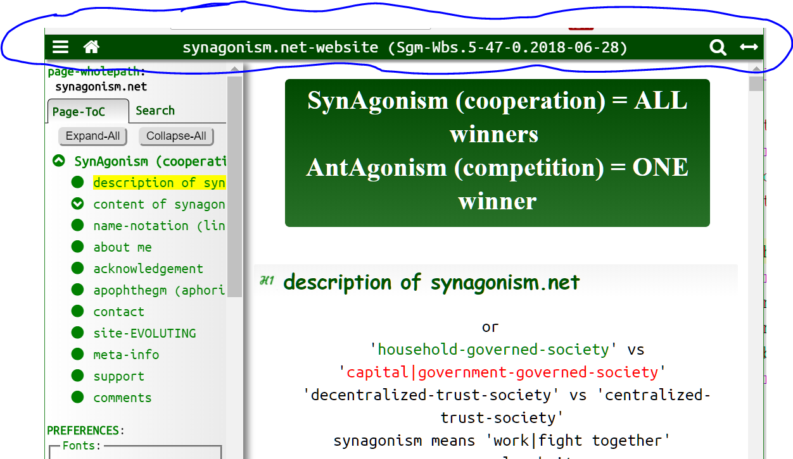
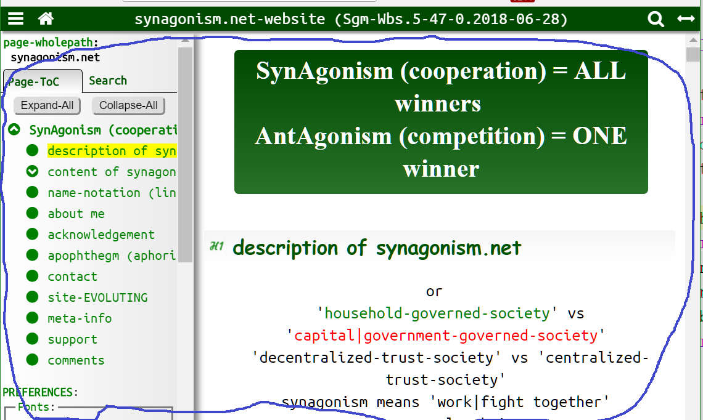
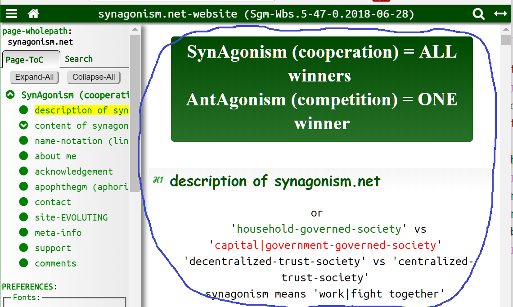
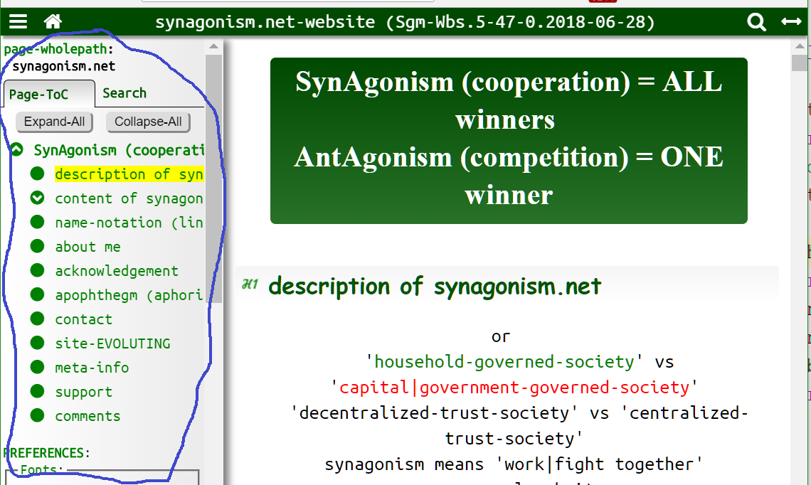
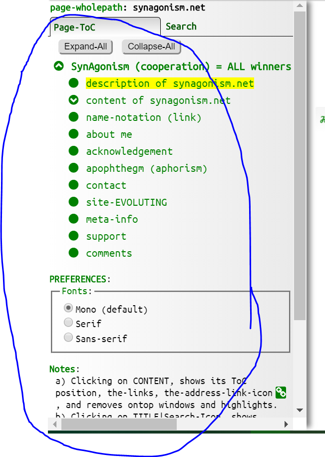
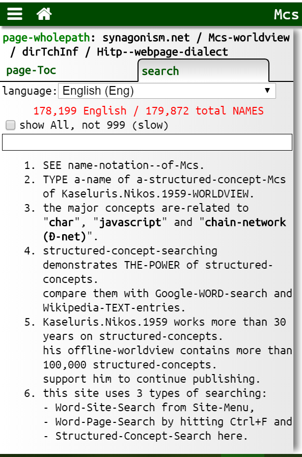
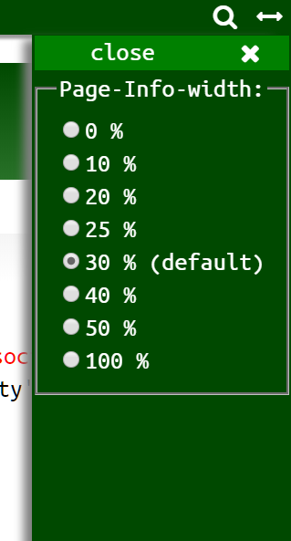
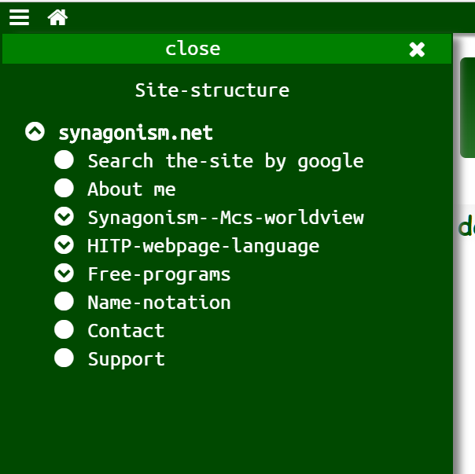
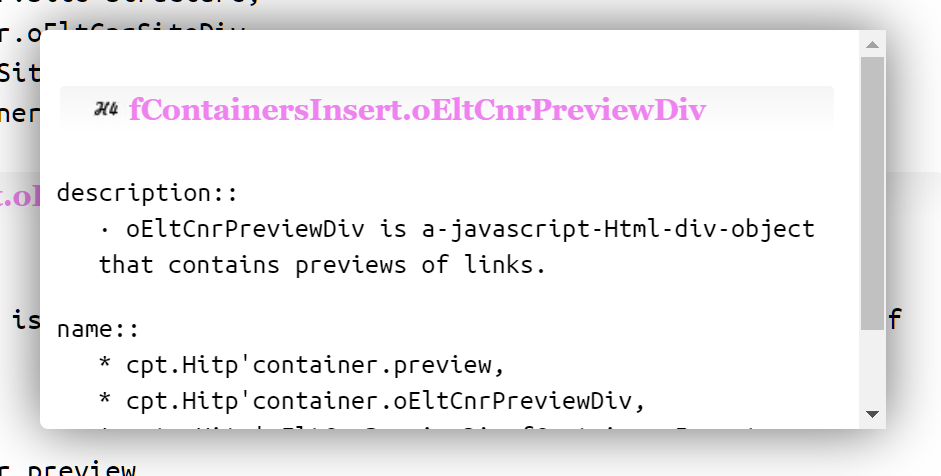

overview of HitpLago
description::
· HitpLago is an-html5.id.toc.preview WebApp-(Html5-Css-JS) text-document-computer-language (format|method|framework) for publishing
title-content-tree documents with these advantages:
1) Html5: no need for special programs to read them, as all machines have the needed browser (= html reader). Also html5-elements structure the-text for humans and machines.
2) Id: anyone can-refer to ANY PART of them, because all their html-elements have IDs.
3) Toc: automatically created expandable table-of-contents makes reading EASY.
4) Preview: same domain link-preview makes reading FAST.
5) SEARCHING: by adding names, on many languages, Node.js programs automatically create indexes of them. Then the-user can have access to these names from any location in a-network of documents. Having names on definitions, then we can make the-documents monosemous and the-users experience personalized learning if we add preview-links on the-names of sentences.
6) offline: by adding a local web-server like XAMPP, the-network of documents works without an-internet connection.
7) interactivity: the-documents are not simple webpages, but WebApps in itselsf (eg clicking Shift+1 displays the-Unicode-codepoints of selected charaters) and can incorporate any new web-tech as AI, VR, AR.
· Knowledge of Html, Css, Browser-javascript is a-must to read the-rest of this page.
· Artificial-Intelligence will never succeed to understand today's POLYsemous unstructured-info\1\ (only a portion of it will manage), for the simple fact it\1\ is polysemous and some times ZEROsemous (= meaningless)!!!
· the-creation of MONOsemous-structured-documents is a-prerequisite to manage the enormous quantity of human-information with the-help of machines.
· in my opinion, another prerequisite to trust AI, is the-storage of our knowledge not in texts but in networks of senso-concepts-Mcs using my other language, McshLago.
name::
* McsEngl.McsTchInf000008.last.html!⇒HitpLago,
* McsEngl.dirTchInf/McsTchInf000008.last.html!⇒HitpLago,
* McsEngl.HitpLago!=McsTchInf000008,
* McsEngl.HitpLago!=Html5.Id.Toc.Preview-WebAppDoc-language, {2025-05-21}
* McsEngl.Hitp!⇒HitpLago,
* McsEngl.Hitp-WebAppDoc-language!⇒HitpLago,
* McsEngl.Html5IdTocPreview!⇒HitpLago,
* McsEngl.Html5.id.toc.preview!⇒HitpLago,
* McsEngl.Html5.id.toc.preview--web-page-format!⇒HitpLago,
* McsEngl.Html5.id.toc.preview--page-format!⇒HitpLago,
* McsEngl.Html5IdTocPreview--web-page-format!⇒HitpLago,
* McsEngl.Html5IdTocPreview-WebAppDoc-language!⇒HitpLago,
* McsEngl.Lhp!⇒HitpLago, {2020-05-06},
* McsEngl.Lhitp!⇒HitpLago, {2020-05-06}, /el-hitp/,
* McsEngl.HitpLago-(Html5.Id.Toc.Preview)!⇒HitpLago,
* McsEngl.HitpLago-dialect!⇒HitpLago,
* McsEngl.HitpLago-language!⇒HitpLago,
* McsEngl.HitpLago--web-page-format!⇒HitpLago,
* McsEngl.HitpLago--web-page-dialect!⇒HitpLago,
* McsEngl.HitpLago--web-page-application-format!⇒HitpLago,
* McsEngl.HitpLago--page-format!⇒HitpLago,
* McsEngl.WebAppDoc-Hitp-language!⇒HitpLago,
* McsEngl.generic-specific-pair--web-page!⇒HitpLago, {2013.09.01}
* McsEngl.lagHitp!⇒HitpLago, {2019-07-05},
* McsEngl.lagHitp--web-language!⇒HitpLago, {2018-10-27},
* McsEngl.lagoHitp!⇒HitpLago, {2019-07-05},
* McsEngl.title-content-tree--document---web-page-format!⇒HitpLago,
02_archetype (input) of HitpLago
description::
· archetype is the-entity we want to model with a-language.
· a-HitpLago-archetype is a-text-document with a-title-content-tree recursive structure.
| TCTDoc = | (Title, Content)
|
| Title = | a-phrase describing Content
|
| Content = | (one|more ContentUnit, one|more TCTDoc)
or
(one|more ContentUnit)
|
| ContentUnit = | (paragraph-with-sentences
or paragraph-with-subparagraphs
or non-sentences(lists, tables, code)
|
name::
* McsEngl.HitpArcho!=archetype-of-HitpLago,
* McsEngl.Hitparcho!⇒HitpArcho, {2023-10-21},
* McsEngl.HitpLago'02_archetype!⇒HitpArcho,
* McsEngl.HitpLago'archetype!⇒HitpArcho,
* McsEngl.archo-doc-of-HitpLago!⇒HitpArcho,
* McsEngl.archodoc-of-HitpLago!⇒HitpArcho,
* McsEngl.document-archetype--of-HitpLago!⇒HitpArcho,
* McsEngl.HitpLago'archetype'title-content-tree-document!⇒HitpArcho,
* McsEngl.HitpLago'archetype-document!⇒HitpArcho,
* McsEngl.HitpLago'archo!⇒HitpArcho, {2019-02-21},
* McsEngl.HitpArcho-doc!⇒HitpArcho,
* McsEngl.HitpLago'structured-document!⇒HitpArcho,
* McsEngl.HitpArcho!⇒HitpArcho!⇒HitpArcho,
* McsEngl.TCTDoc--of-HitpLago!⇒HitpArcho,
* McsEngl.title-content-document--of-HitpLago!⇒HitpArcho,
* McsEngl.title-content-tree-document--of-HitpLago!⇒HitpArcho,
part::
• title,
• content,
• node,
• level,
• depth,
HitpArcho'title
description::
· an-archo-title is text (a-name or a-phrase) that describes an-archo-content.
· sometimes, a-title is generic-information and a-content specific.
name::
* McsEngl.HitpArcho'info-title,
* McsEngl.HitpArcho'title,
* McsEngl.title-content-tree--document'title,
HitpArcho'title.Root
description::
· root-title is-called the outermost title-node in the-archetype-tree.
name::
* McsEngl.HitpArcho'root-title,
* McsEngl.HitpArcho'root-node,
* McsEngl.title-content-tree--document'title.root,
HitpArcho'content
description::
· archo-content\1\ is the-children of an-archo-title.
· it\1\ is an order-set of doc-units and title-content-tree--docs.
name::
* McsEngl.HitpArcho'info-content,
* McsEngl.HitpArcho'content,
* McsEngl.title-content-tree--document'content,
HitpArcho'content-unit
description::
HitpArcho-content-unit is:
- a-paragraph-with-sentences: an order-set of sentences, or
- a-paragraph-with-subparagraphs: an order-set of group of sentences separated with empty lines, or
- a-list-of-nonsentences: lists, tables, trees.
- any unit can contain images,
name::
* McsEngl.HitpArcho'info-content-unit,
* McsEngl.HitpArcho'content-unit,
* McsEngl.title-content-tree--document'content-unit,
HitpArcho'node
description::
· the-nodes of the-archo-tree are of two types: archo-doc-units or archo-titles.
name::
* McsEngl.HitpArcho'node!⇒HitpArchoNode,
* McsEngl.HitpArchoNode!=node-of-HitpArcho,
specific::
• ancestor-node,
• bottom-node,
• child-node,
• descendant-node,
• leaf-node,
• parent-node,
• root-node,
• sibling-node,
• top-node,
HitpArchNode'number
description::
· every node has 2 numbers that denote its distance from the-top (root) and the-bottom of the-tree.
name::
* McsEngl.HitpArcho'number-of-node,
* McsEngl.HitpArcho'node-number,
* McsEngl.HitpLago'number-of-archo-node,
specific::
• root-number-of-node,
• bottom-number-of-node,
HitpArchNode'number.ΒΟΤΤΟΜ
description::
· bottom-number of a-node is its distance from the-bottom.
· the-bottom-node has 0 bottom-number.
· the-root-node has the-highest bottom-number.
name::
* McsEngl.HitpArcho'bottom-number-of-node,
* McsEngl.HitpArcho'node-bottom-number,
* McsEngl.HitpLago'height-number-of-archo-node,
* McsEngl.HitpLago'bottom-number-of-archo-node,
HitpArchNode'number.ROOT
description::
· root-number of a-node is its distance from the-top (root).
· the-root has 0 root-number.
· a-bottom-node has the-highest root-number.
name::
* McsEngl.HitpArcho'root-number-of-node,
* McsEngl.HitpArcho'node-root-number,
* McsEngl.HitpLago'depth-number-of-archo-node,
* McsEngl.HitpLago'root-number-of-archo-node,
HitpArchNode.BOTTOM
description::
· bottom-node is a-node with the-highest root-number.
name::
* McsEngl.HitpArcho'bottom-node,
* McsEngl.HitpArcho'node.bottom,
HitpArchNode.LEAF
description::
· leaf-node is a-node without children.
name::
* McsEngl.HitpArcho'leaf-node,
* McsEngl.HitpArcho'node.leaf,
HitpArcho'level
description::
· level-of--HitpLago-archetype is the-set of nodes with the-same number.
name::
* McsEngl.HitpArcho'level,
HitpArcho'depth|height
description::
· depth|height-of--HitpLago-archetype is the-number of its levels.
name::
* McsEngl.HitpArcho'depth,
* McsEngl.HitpArcho'height,
HitpArcho'table-of-contents
description::
· archetype-table-of-contents is a-whole-part-tree with nodes the-titles of the-archo-doc.
name::
* McsEngl.HitpArcho'table-of-contents,
* McsEngl.HitpArcho'Toc,
03_WebAppDoc (output) of HitpLago
description::
· a-HitpLago-WebAppDoc is A-DOCUMENT which maps|represents|denotes|models an-archo-title-content-tree-doc.
· it is structured for humans and machines.
· it contains and extra information apart of the archo-doc representation, such as meta-info, audio, video, webapps.
· it is-written in 3 computer-languages, and it is a-web-application:
• Html: for the-structure of the-information,
• Css: for its presentation,
• Browser-javascript (Jsbr): for its processing.
· the-Html-doc is the most whole container which includes the-Css-doc and the-Jsbr-doc.
[HmnSgm.2017-09-23]
name::
* McsEngl.HitpApp!⇒HitpDoc,
* McsEngl.HitpDoc!=the-output-of-HitpLago,
* McsEngl.HitpLago'03_WebApp!⇒HitpDoc,
* McsEngl.HitpLago'WebApp!⇒HitpDoc, {2019-02-21},
* McsEngl.HitpLago'output!⇒HitpDoc,
* McsEngl.HitpLago'page!⇒HitpDoc, {2019-02-23},
* McsEngl.HitpLago-code!⇒HitpDoc,
* McsEngl.HitpLago-doc!⇒HitpDoc,
* McsEngl.HitpLago-model!⇒HitpDoc,
* McsEngl.HitpLago-webpage!⇒HitpDoc, {2019-06-15},
* McsEngl.HitpPage!⇒HitpDoc,
* McsEngl.HitpWebAppDoc!⇒HitpDoc,
* McsEngl.HitpWebPage!⇒HitpDoc,
* McsEngl.WebApp.HitpLago!⇒HitpDoc,
browser-compatibility of HitpDoc
description::
• HitpDocs are-tested on modern {2016} browsers on win10: Chrome, Firefox, Safari, Edge, IE11.
name::
* McsEngl.HitpDoc'browser-compatibility,
* McsEngl.HitpLago'browser-compatibility,
* McsEngl.HitpLago'browser-support,
download of HitpDoc
name::
* McsEngl.HitpLago'download,
* McsEngl.HitpDoc'download,
GitHub-site:
· since version.10.2014-08-05.valuenames I published the-code on GitHub.
• https://github.com/synagonism/hitp/.
Synagonism-site:
• HitpLago.19.2025-05-21.separated,
• HitpLago.18.2021-05-25.module,
• HitpLago.17.2018-09-15.search-scalability,
• HitpLago.16.2017-06-05.Searching,
• HitpLago.15.2016-10-27.any-machine,
• HitpLago.14.2016-06-09.title-content-tree,
• HitpLago.12.2016-01-24.Toc-icons,
• HitpLago.11.2015-10-26.preferences,
• HitpLago.10.2014-08-05.valuenames,
• HitpLago.08.2014-01-09.Toc,
• HitpLago.07.2013-11-06.tabs,
• HitpLago.05.2013-07-15.Toc-algo,
• HitpLago.04.2013-06-27.html5.id.toc.preview,
• HitpLago.03.2013-04-14.preview,
• HitpLago.02.2013-04-01.Toc,
• HitpLago.01.2011-02-17.html5.id,
file of HitpDoc
· every HitpDoc is comprised of:
* one Html-file the main container,
* one Css-file,
* one Jsbr-file,
* one optional directory with all other needed files such as pictures, audio, video, Css, etc.
· the-name of the-directory is the-same with the-name of the-html-file plus the '.files' extension.
name::
* McsEngl.HitpDoc'file!⇒HitpDocFile,
* McsEngl.HitpDocFile,
specific::
* Html-file,
* Css-file,
* javascript-file,
* config.json,
* namidx.lagRoot.json,
* namidx.lagEng00.json,
* namidx.lagEng01.json, ..,
directory of HitpDoc
description::
· optionally, the-HitpDoc has a-directory with all extra files needed such as images, specific Css or Jsbr code, anything.
· its name is the-name of the-HitpLago-Html-file plus '.files'.
name::
* McsEngl.HitpDoc'directory,
style of HitpDoc
description::
· the-style of a-HitpDoc is-created mainly with the-HitpLago-Css-code, with html-elements and the-javascript-doc.
name::
* McsEngl.HitpDoc'style!⇒HitpStyle,
* McsEngl.HitpStyle,
HitpStyle.TEXT
name::
* McsEngl.HitpStyle.text,
* McsEngl.HitpLago--text-style,
text-style.LINE
name::
* McsEngl.HitpLago--text-style.line,
text-style.line.THROUGH
description::
· with the-Html-element <del>.
name::
* McsEngl.HitpLago--text-style.line.through,
Html-code of HitpDoc
description::
· the-Html-language models the-structure of a-HitpLago-WebApp and stores the-content of the-archo-doc.
· the-Html-doc is the most whole CONTAINER of the-WebApp.
· it contains the-Css-doc and the-Jsbr-doc.
name::
* McsEngl.HitpLago'Html!⇒HitpHtml, {2019-02-21},
* McsEngl.Hitphml!⇒HitpHtml, {2020-05-08},
* McsEngl.HitpHtml!=Html-code-of-HitpLago,
* McsEngl.HitpHtml-code!⇒HitpHtml,
* McsEngl.HitpDoc'Html-code!⇒HitpHtml,
* McsEngl.Html-code--of-HitpLago!⇒HitpHtml,
* McsEngl.HitpLago-Html!⇒HitpHtml,
HitpHtml'Html5
description::
· we use the-Html5-elements section, header, footer to create the-parts of a-HitpLago-page that maps a-title-content-tree-doc.
name::
* McsEngl.HitpHtml'Html5,
* McsEngl.Hitphml5,
* McsEngl.HitpLago-Html5,
HitpHtml'title-content-tree--document
description::
· a-HitpLago--title-content-tree-document maps an-archo-title-content-tree--document.
· we use the section, header, footer and p Html-elements to create HitpDocs.
name::
* McsEngl.HitpLago'title-content-tree--document,
* McsEngl.HitpHtml'title-content-tree--document,
* McsEngl.HitpLago-Tctd,
part::
• title-of-HitpLago-tree,
• content-of-HitpLago-tree,
• doc-unit-of-HitpLago-tree,
specific::
• footer-tree,
• header-tree,
• meta-tree,
• p-tree,
• root-tree,
• section-tree,
HitpLago-Tctd.ROOT (header)
description::
· a-HitpLago-root-tree (a-HitpDoc) maps|represents an-archo-root-tree (a-title-content-tree-doc).
· we use a-header and an-h1 elements to create the-title, and an-ordered-set of h1-trees with last a-footer-tree to create the-content of the-root-tree.
· the-header-element is the first child of the-body-element.
<header id="idHeader">
<h1 id="idHeaderH1">Title
</h1>
</header>
<section id="idName">
<h1 id="idNameH1">Title
</h1>
content
</section>
<footer id="idFooter">
<p id="idFooterP1">Title:
doc-units
</p>
</footer>
name::
* McsEngl.HitpLago-Tctd.header,
* McsEngl.HitpLago-header-tree,
* McsEngl.HitpLago-Tctd.root,
* McsEngl.HitpLago-root-tree,
* McsEngl.HitpLago-document.root,
* McsEngl.HitpDoc.root,
Depth:
· the biggest depth of a-HitpDoc is 6+1.
· this is because the-heading-elements h1 ... h6 are 6 and thus a-section-tree can have only 5 subtrees.
· the extra depth we get from p-trees.
PROPOSAL: Because many documents use deeper depth than 7 (even-though I do-not-think it is a good practice) I proposed on {2010.10.24} in public-html-comments@w3.org list to use all the single-digit numbers 0-9 as html-headings.
HitpLago-Tctd.SECTION
description::
· a-section-tree is a-tree in which we use the-section-element as a-container, a-heading-element for its title and for its content, doc-units or other section-trees.
· the-subtrees of a-section-tree have ordered titles in the form h1, h2, h3, h4, h5, and h6.
<section id="idName2">
<h2 id="idName2H2">Title2
</h2>
<p>Sentence1.
Sentence2.
</p>
<section id="idName3">
<h3 id="idName3H3">Title3
</h3>
<p>Sentence1.
Sentence2.
</p>
</section>
</section>
name::
* McsEngl.HitpLago-Tctd.section,
* McsEngl.HitpLago-section-tree,
specific::
• h1-section-tree (has h1-element as title),
• h2-section-tree (has h2-element as title),
• h3-section-tree (has h3-element as title),
• h4-section-tree (has h4-element as title),
• h5-section-tree (has h5-element as title),
• h6-section-tree (has h6-element as title),
HitpLago-Tctd.FOOTER
description::
· a-HitpLago-footer-tree is an optional special tree, last child of the-root-tree.
· it is-created with the-footer-element, with no title, and content document-units with text that ends the-text of the-doc.
<footer id="idFooter">
<p id="idFooterP1">Title:
doc-units
</p>
</footer>
name::
* McsEngl.HitpLago-Tctd.footer,
* McsEngl.HitpLago-footer-tree,
HitpLago-Tctd.P
description::
· a-HitpLago-p-tree is always a-leaf-tree we create with the-p-element.
Its-title is the first line which ends with ':'.
Its-content contains only doc-units.
<p id="idName">Title:
sentences or subparagraphs
</p>
//or
<div id="idName">
<p>Title:
Sentence1.
Sentence2.
</p>
<table>
...
</table>
</div>
name::
* McsEngl.HitpLago-Tctd.p,
* McsEngl.HitpLago-p-tree,
HitpLago-Tctd.Meta
description::
· a-WebApp-meta-tree is a special section-tree, which is NOT PART of the-root-tree.
· it contains meta-info about the-doc such as versions, comments, support etc.
<section id="idMeta">
<h1 id="idMetaH1">Meta-Info
</h1>
content.meta
<p id="idMetaWebpage_path"><span class="clsB clsColorGreen">page-wholepath</span>:
HitpLago-WebApp
∈ synagonism.net
</p>
</section>
name::
* McsEngl.HitpLago-Tctd.meta,
* McsEngl.HitpLago-meta-tree,
HitpHtml'title
description::
· a-HitpLago-title maps an-archo-title\1\.
· we use the-heading-elements (h1, h2, ... h6) to implement it\1\:
<h1 id="idName">title</h1>
or the first line of a-p-element ending with '::'
<p id="idName">title::
doc-unit
</p>
name::
* McsEngl.HitpLago'title,
* McsEngl.HitpLago'WebApp-title,
* McsEngl.HitpHtml'title,
HitpHtml'content
description::
· a-HitpLago-content maps an-archo-content.
· it contains HitpDoc-units and other HitpLago-trees.
name::
* McsEngl.HitpLago'content,
* McsEngl.HitpLago'WebApp-content,
* McsEngl.HitpHtml'content,
HitpHtml'content-unit
description::
· a-HitpDoc-unit maps an-archo-doc-unit.
· it is-created with p-elements and inline elements, or we use a-div-element as a-container if and extra block elements like ol, ul, table create the-doc-unit.
name::
* McsEngl.HitpHtml'doc-unit!⇒HitpHtmlcunit,
* McsEngl.HitpHtml'document-unit!⇒HitpHtmlcunit,
* McsEngl.HitpHtml'unit!⇒HitpHtmlcunit,
* McsEngl.HitpHtmlcunit,
* McsEngl.HitpLago-Html-unit!⇒HitpHtmlcunit,
specific::
• paragraph-with-sentences-doc-unit,
• paragraph-with-subparagraphs-doc-unit,
• paragraph-with-nonsentences-doc-unit,
HitpHtmlcunit.Paragraph-with-sentences
description::
· for readability, we put every sentence in a new line.
<p id="idName">Sentence1.
Sentence2.
SentenceLast.
</p>
name::
* McsEngl.HitpHtmlcunit.paragraph-with-sentences,
* McsEngl.HitpHtmlcunit.sentences,
* McsEngl.HitpLago'sentences-Html-doc-unit,
HitpHtmlcunit.Paragraph-with-subparagraphs
description::
<p id="idName">Sentence1.
Sentence2.
Sentence3.
SentenceLast.
</p>
name::
* McsEngl.HitpHtmlcunit.paragraph-with-subparagraphs,
HitpHtmlcunit.Paragraph-with-nonsentences
description::
<div id="idName">
<p>Sentence1.
Sentence2.
</p>
<table>
...
</table>
<a class="clsHide" href="#idName"></a></div>
name::
* McsEngl.HitpHtmlcunit.paragraph-with-nonsentences,
* McsEngl.HitpHtmlcunit.nonsentences,
* McsEngl.HitpLago'nonsentences-Html-doc-unit,
HitpHtml'file
description::
· the-html-file is the main file of the-HitpDoc.
· it is the most whole CONTAINER of all files of the-WebApp.
· see the-example-file.
name::
* McsEngl.Html-file--of-HitpLago,
* McsEngl.HitpLago'file.Html,
* McsEngl.HitpHtml'file,
HitpHtml'IDs
description::
· the core concept (and first motive) of our-proposal is the-addition of ID-attributes on all elements of a-HitpLago-page.
· for example:
<h1 id="idXxxx">...
<p id="idYyyy">...
· now we can-refer to any part of the-document!!!
name::
* McsEngl.HitpLago'id, {2019-02-24},
* McsEngl.HitpHtml'id!⇒HitpLago'id,
* McsEngl.HitpLago-id!⇒HitpLago'id,
The-IDs must-be unique:
· you can-use as ID whatever you want.
· we sugest to begin with "id" in-order to be-distinguished from other words in the-text and do-not-contain spaces.
· for example:
id, idHeader, idLagHitpidx-income, ...
ID-Patterns:
· if the-author of a-doc uses patterns to write the-IDs of a-text-file, it helps the-reader to quickly identify the-parts of the-file.
· examples:
- idA4 (article)
- idA4P2 (paragraph)
- idP2 (Part)
- idP2C2 (Chapter)
NOTATION::
the-ID of a-heading-element is the-ID of its section-element plus H1, H2, etc.
· this way we can-link and preview the-part of the-doc with this heading.
address-link-icon of HitpLago
description::
· the-IDs must-be visible to the-reader:
· the-reader, in-order to REFER to any part of the-document, must-know the-ID of this part of the-file.
· this can-be-done by adding a hidden element in this part of the-file that will-be-visible when we want to see it and not disturbing our text.
· but if this hidden-element is and a-link-element, then the-reader could-copy the-address of this part of the-file from the-address-bar of his browser.
· here is an-example of the simple code we have to add to reach our goal.
<p id="idYyyy">...
<a class="clsHide" href="#idYyyy"></a></p>
· with this code, when the-reader clicks|taps on content, at the-end of the clicked doc-unit appears the-ADDRESS-LINK-ICON.
· clicking on this icon, s|he can-see the-ID of this text and s|he can-copy from the-address-bar the-address of this particular part of the-text.
· the-paragraph you are-reading now has the-feature we are-talking about and you can-experiment with it.
· we can-set IDs, if we need them, on every SENTENCE in a-paragraph.
name::
* McsEngl.HitpLago'address-link-icon,
* McsEngl.HitpLago'id'address-link-icon,
HitpHtml'links
description::
· by setting IDs in all elements of a-text, we can-refer to any part of a-document.
· then we can-use links in all places in a-text we refer to another place inside a-document or outside of it.
· law-texts are full of references.
· find the-references it is difficult and sometimes impossible.
· if the-references are "one click away", then reading law will become easier.
name::
* McsEngl.HitpLago'link,
* McsEngl.HitpHtml'link,
* McsEngl.HitpLago-link,
HitpHtml'math-formulas
description::
· using MathJax we can-have "beautiful math in all browsers".
· for example (MathML code):
,
HOW:
1. we need to add the following code:
· using MathJax version 3:
<script src="https://polyfill.io/v3/polyfill.min.js?features=es6"></script>
<script id="MathJax-script" async src="https://cdn.jsdelivr.net/npm/mathjax@3/es5/tex-mml-chtml.js"></script>
- no need for MathJax versions, works on both TeX and MathML input.
- example TeX: When \(a \ne 0\), there are two solutions to \(ax^2 + bx + c = 0\) and they are \[x = {-b \pm \sqrt{b^2-4ac} \over 2a}.\]
When \(a \ne 0\), there are two solutions to \(ax^2 + bx + c = 0\) and they are \[x = {-b \pm \sqrt{b^2-4ac} \over 2a}.\]
another inline expression \(\sum_{n=1}^{\infty} 2^{-n} = 1\)
· old version:
<script src="https://cdnjs.cloudflare.com/ajax/libs/mathjax/2.7.4/MathJax.js?config=TeX-MML-AM_CHTML" async></script> and
2. create TeX | mathML-code (I prefer TeX for compactness).
An easy method is to copy it from online sites like:
* http://www.wiris.com/editor/demo/en/developers#mathml-latex,
* http://www.wiris.com/editor/demo/en/chemtype,
name::
* McsEngl.Hitpmath,
* McsEngl.Hitpmath!=Hitp-math,
* McsEngl.Mathnotation.synagonism.net,
* McsEngl.MathJax-Webapp,
* McsEngl.Mcshmath,
* McsEngl.Mcshmath!=Mcsh-math,
* McsEngl.Webapp.MathJax,
* McsEngl.HitpLago'math,
* McsEngl.HitpLago-math,
* McsEngl.math-in-HitpLago,
Css-code of HitpDoc
description::
· the-Css-language models the-presentation of the-archo-doc.
· we use a-Css-file\1\ for harmonization in the-appearance of documents and for the-Toc creation.
· you need the following code, inside the-Html-doc, to use it\1\:
<link rel="stylesheet" href="../dirManager/HitpM.css">
· also you can modify the-appearance of the-document by using AND your own Css-file.
name::
* McsEngl.HitpCss!=HitpLago-Css-code,
* McsEngl.HitpCss-code!⇒HitpCss,
* McsEngl.HitpLago'Css!⇒HitpCss, {2019-02-21},
* McsEngl.HitpDoc'Css-code!⇒HitpCss,
* McsEngl.HitpLago-Css!⇒HitpCss,
HitpCss'class
description::
· like the-IDs, the-names of all Css-classes begin with 'cls'.
name::
* McsEngl.clsHitp!⇒HitpCssCls, {2022-12-14},
* McsEngl.HitpLago'class-of-Css!⇒HitpCssCls,
* McsEngl.HitpLago'cls!⇒HitpCssCls, {2019-02-28},
* McsEngl.HitpCss'class!⇒HitpCssCls,
* McsEngl.HitpLago-cls!⇒HitpCssCls,
HitpCssCls.clsHide
description::
· this class is-used to display the-links[a] on every element that[a] contain the-address of the-element.
name::
* McsEngl.HitpCssCls.clsHide,
* McsEngl.HitpLago'clsHide,
HitpCssCls.clsPreview
description::
· links with this class, display a-preview of their info and with a second click go to that location.
name::
* McsEngl.HitpCssCls.clsPreview,
* McsEngl.HitpLago'clsPreview,
HitpCssCls.clsClicked
description::
· this class is-added on the-Html-elements clicked by the-user and adds misc functionality:
- display the-address-link-icons.
- add color on the-links in the clicked element.
name::
* McsEngl.HitpCssCls.clsClicked,
* McsEngl.HitpLago'clsClicked,
HitpCssCls.clsTocExpand
description::
· if this class is-present on idMetaWebpage_path paragraph, then when the-page is-opened the-Toc is-expanded.
name::
* McsEngl.HitpCssCls.clsTocExpand,
* McsEngl.HitpLago'clsTocExpand,
HitpCssCls.paperbook-page
description::
· it is-used on span-elements to display the-number of a-page of a-paper-book in HitpLago-format.
name::
* McsEngl.HitpCssCls.paperbook-page,
* McsEngl.HitpLago'clsPagePb,
HitpLago'clsPagePb {
display: block;
text-align: right;
color: green;
}
HitpCssCls.CENTER
name::
* McsEngl.HitpLago'center-text,
* McsEngl.HitpCssCls.center,
* McsEngl.HitpLago'clsCenter,
HitpLago'clsCenter {
text-align: center;
}
HitpLago'clsCenterBlock {
display: block;
margin-left: auto;
margin-right: auto;
}
HitpLago'clsCenterInline {
display: block;
text-align: center;
}
HitpCssCls.BUTTON
name::
* McsEngl.HitpLago'button-class,
* McsEngl.HitpCssCls.button,
* McsEngl.HitpLago'clsBtn,
HitpLago'clsBtn {
border-radius: 5px;
font-size: 12px;
margin: 2px 0 5px 12px;
}
HitpLago'clsBtn:hover {
background: #e0f2f7;
color: red;
}
HitpCssCls.COLOR
name::
* McsEngl.HitpLago'color-classes,
* McsEngl.HitpCssCls.color,
* McsEngl.HitpLago'clsColor,
HitpLago'clsColorBlue {
color: #0000ff;
}
HitpLago'clsColorGreen {
color: #008000;
}
HitpLago'clsColorGreenBg {
background-color: #008000;
}
HitpLago'clsColorRed {
color: #ff0000;
}
HitpLago'clsColorYellow {
color: #FFFF00;
}
HitpLago'clsColorYellowBg {
background-color: #FFFF00;
}
HitpCssCls.FONT
name::
* McsEngl.HitpLago'font-classes,
* McsEngl.HitpCssCls.font,
* McsEngl.HitpLago'clsFont,
HitpLago'clsFontGrExt {
font-family: "Palatino Linotype";
}
HitpLago'clsFontGrMg {
font-family: MgPolNewTimes;
font-size: 16px;
}
HitpLago'clsFontSerif {
font-family: Serif, "Times New Roman", Georgia;
}
HitpLago'clsFontSansserif {
font-family: SansSerif, "Microsoft Sans Serif", Arial, Dialog, Tahoma;
}
HitpLago'clsFontMonospaced {
font-family: Monospaced, "Courier New", Courier;
}
HitpLago'clsFontScript {
font-family: Script "Monotype Corsiva";
}
HitpLago'clsFontDecorative {
font-family: Wingdings;
}
HitpCssCls.SIZE
name::
* McsEngl.HitpLago'size-of-font,
* McsEngl.HitpCssCls.size,
* McsEngl.HitpLago'clsSize,
HitpLago'clsSizeSmall {
font-size: small;
}
HitpLago'clsSizeSmallX {
font-size: x-small;
}
HitpLago'clsSizeMedium {
font-size: large;
}
HitpLago'clsSizeLarge {
font-size: large;
font-weight: bold;
}
HitpLago'clsSizeLargeX {
font-size: x-large;
font-weight: bold;
}
HitpCssCls.BIU
name::
* McsEngl.HitpLago'bold-class,
* McsEngl.HitpLago'italic-class,
* McsEngl.HitpLago'underline-class,
* McsEngl.HitpCssCls.bold,
* McsEngl.HitpCssCls.italic,
* McsEngl.HitpCssCls.underline,
* McsEngl.HitpLago'clsB,
* McsEngl.HitpLago'clsBU,
* McsEngl.HitpLago'clsI,
* McsEngl.HitpLago'clsU,
HitpLago'clsB {
/* use strong element, not this */
font-weight: bold;
}
===
· also use the-Html-element <strong>.
HitpLago'clsBU {
font-weight: bold;
text-decoration: underline;
}
HitpLago'clsI {
font-style: italic;
}
===
· also use the-Html-element <em>.
HitpLago'clsU {
text-decoration: underline;
}
HitpCss'file
description::
· the-Css-code has 3 files.
· the-HitpM.css, main file, and 2 font files, HitpFilFntUbuntuMonoRegular.ttf and HitpFilIcnFa463.woff2 (Icons Font Awesome 4.6.3)
· you can-download them from github-(https://github.com/synagonism/hitp/) or from my-Hitp-example-site-(https://synagonism.net/dirHitp/) here:
- HitpM.css,
- HitpFilFntUbuntuMonoRegular.ttf,
- HitpFilIcnFa463.woff2,
name::
* McsEngl.HitpCss'file,
* McsEngl.HitpDocFile.Css,
* McsEngl.HitpFilFntUbuntuMonoRegular.ttf,
* McsEngl.HitpFilIcnFa463.woff2,
* McsEngl.HitpM.css,
JavaScript-code of HitpDoc
description::
Browser-JavaScript-language models the-information processing on the-page.
- creates the-Toc and inserts it into the-page.
- makes the-width of Toc-container dynamic.
- adds preferences on the-page.
- adds the-site-structure.
- adds the-page-path.
- ...
name::
* McsEngl.HitpLago'browser-JavaScript-code!⇒HitpJsb,
* McsEngl.HitpLago'JavaScript-code!⇒HitpJsb,
* McsEngl.HitpLago'JS-code!⇒HitpJsb,
* McsEngl.HitpJsb!=HitpLago-JavaScript-browser-code,
* McsEngl.HitpJsb-code!⇒HitpJsb,
* McsEngl.HitpDoc'browser-JavaScript-code!⇒HitpJsb,
* McsEngl.HitpDoc'JavaScript-code!⇒HitpJsb,
* McsEngl.HitpDoc'JS-code!⇒HitpJsb,
* McsEngl.HitpDoc'Jsbr-code!⇒HitpJsb,
* McsEngl.HitpLago'Jsbr!⇒HitpJsb, {2019-02-21},
* McsEngl.HitpLago-Jsbr!⇒HitpJsb,
* McsEngl.HitpLago--Jsbr-code!⇒HitpJsb,
* McsEngl.JavaScript-code--of-HitpLago!⇒HitpJsb,
* McsEngl.JavaScript-code--of-HitpLago!⇒HitpJsb,
* McsEngl.Jsbr-code--of-HitpLago!⇒HitpJsb,
HitpJsb'file
description::
HitpM.js is the-JavaScript-code you need to create a-HitpLago-WebAppDoc.
· it is part of the-Html-doc.
· it is-included using the-script-element at the-end of the-body-element:
<script type="module">
import * as oHitp from '../dirManager/HitpM.js'
</script>
· so, HitpMisc000.last.html, HitpM.css and HitpM.js is the-code needed to create HitpLago-pages, and it is free (MIT license).
name::
* McsEngl.HitpDocFile.JavaScript,
* McsEngl.HitpLago'JavaScript-file,
* McsEngl.HitpJsb'file,
* McsEngl.HitpM.js,
HitpJsb'API
description::
· a-HitpLago-Jsbr-document has an-API, like any programing-language document, with oHitp the-most-whole-object.
name::
* McsEngl.API.HitpLago,
* McsEngl.HitpLago'API,
* McsEngl.HitpJsb'API,
repository::
* https://github.com/synagonism/hitp,
* latest: https://github.com/synagonism/hitp/tree/gh-pages,
oHitp
description::
oHitp is the-most-whole-object of the-HitpLago-JavaScript-document.
name::
* McsEngl.HitpLago'API'oHitp!⇒oHitp,
* McsEngl.HitpLago'oHitp!⇒oHitp,
* McsEngl.oHitp, {2019-02-24},
member::
// 17-7-7.2021-04-28 Object.getOwnPropertyNames(oHitp).sort().join(', ')
[aNamidxRoot, aSuggestions, aVersion, bEdge, bFirefox, fContainersInsert, fObjvalRKey, fTocTriCreate, fTocTriHighlightNode, nCfgPageinfoWidth, oEltClicked, oEltSitemenuUl, oTriUl, sCfgHomeLocal, sNamidx, sPathSite, sPathSitemenu, sQrslrAClk, sQrslrAClkLast, sSrchCrnt, sSrchNext]
// 16-5-0.2017-11-09 Object.getOwnPropertyNames(oHitp).sort().join(', ')
[bEdge, bFirefox, bSite, fContainersInsert, fObjvalRKey, fTocTriCreate, fTocTriHighlightNode, nCfgPageinfoWidth, oEltClicked, oTriUl, sCfgHomeLocal, sQrAClk, sQrAClkLast, sVersion]
// Object.getOwnPropertyNames(oHitp.__proto__).sort().join(', ')
[__defineGetter__, __defineSetter__, __lookupGetter__, __lookupSetter__, __proto__, constructor, hasOwnProperty, isPrototypeOf, propertyIsEnumerable, toLocaleString, toString, valueOf]
aNamidxRoot of oHitp
description::
· aNamidxRoot is a-JavaScript-array that contains the-namidx.lagRoot.json if exists.
name::
* McsEngl.aNamidxRoot//oHitp,
* McsEngl.oHitp/aNamidxRoot,
aSuggestions of oHitp
description::
· aSuggestions is a-JavaScript-array-object that contains
the-name-index-file we are-reading each time we search for a-name.
· it is an oHitp member to have access to it from the-console.
name::
* McsEngl.aSuggestions//oHitp,
* McsEngl.oHitp/aSuggestions,
aVersion of oHitp
description::
· contains the-versions of HitpM.js.
[
'hitp.js.17-7-7.2021-04-28: dirMcs',
'hitp.js.17-7-6.2021-04-02: dirMcs',
'hitp.js.17-7-5.2021-04-02: lagLang',
'hitp.js.17-7-4.2021-04-01: langoSinago-path',
'hitp.js.17-7-3.2021-01-04: langoSinago',
'hitp.js.17-7-2.2020-05-24: Greek search accents',
'hitp.js.17-7-1.2020-05-05: F2, ctrl+F2',
'hitp.js.17-6-2.2019-12-14: site-search',
'hitp.js.17-6-1.2019-09-09: search-info',
'hitp.js.17-6-0.2019-09-08: langoKomo-sensorial-concept',
'hitp.js.17-5-0.2019-09-01: langoKamo',
'hitp.js.17-4-0.2019-08-28: scrollTop',
'hitp.js.17-3-0.2019-02-19.2019-03-05: main-name-searching',
'hitp.js.17-2-1.2018-10-08: filMcs.last.html',
'hitp.js.17-2-0.2018-09-21: name-notation',
'hitp.js.17-1-0.2018-09-16: location.hash',
'hitp.js.17-0-1.2018-09-15: home-icon',
'hitp.js.17-0-0.2018-09-15: search-scalability',
'hitp.js.16-5-2.2018-01-23',
'hitp.js.16-5-1.2018-01-06: Ächain-network',
'hitp.js.16-5-0.2017-11-10: arrow keys in search',
'hitp.js.16-4-2.2017-10-17: no type-ahead in search',
'hitp.js.16-4-1.2017-06-23: greek search',
'hitp.js.16-3-5.2017-06-18: type after type-ahead, title-help, cnrInf-width',
'hitp.js.16-2-0.2017-06-07: search-toc-show-easy',
'hitp.js.16-1-2.2017-06-07: search-icon',
'hitp.js.16.2017-06-05.search (15-6): hitp.16.2017-06-05.js',
'hitp.js.15.2016-10-27.any-machine (14-9): hitp.15.2016-10-27.js',
'hitp.js.14.2016-06-09.table-content-tree (13): hitp.14.2016-06-09.js',
'hitp.js.13.2016-06-07.preview (12-11): hitp.13.2016-06-07.js',
'hitp.js.12.2016-01-24.toc-icn-img (11.9): hitp.2016.01.24.12.js',
'hitp.js.11.2015-10-26.preferences: hitp.2015.10.26.11.js',
'hitp.js.10.2014-08-05.valuenames: hitp.2014.08.05.10.js',
'hitp.js.9.2014-08-02.no-jQuery: hitp.2014.08.02.9.js',
'hitp.js.8.2014-01-09.toc-on-hovering: hitp.2014.01.09.8.js',
'hitp.js.7.2013-11-06.tabs: hitp.2013.11.06.7.js',
'hitp.js.6.2013-08-21.site-structure: hitp.2013.08.21.6.js',
'hitp.js.previous: hitp.2013.07.15.js (toc-ul-specific, hitp-obj)',
'hitp.js.previous: /hitp/hitp.2013.06.29.js (hitp-dir)',
'hitp.js.previous: toc.2013.05.30.js (section id)',
'hitp.js.previous: toc.2013.04.19.js (JSLint ok)',
'hitp.js.previous: toc.2013.04.14.js (preview links)',
'hitp.js.previous: toc.2013.04.07.js (button expand|collapse)',
'hitp.js.previous: toc.2013.04.05.js (toc scrolls to highlited)',
'hitp.js.previous: toc.2013.04.04.js (goes click location)',
'hitp.js.previous: toc.2013.04.01.js (toc on any browser)',
'hitp.js.previous: 2010.12.06 (toc on chrome)'
]
name::
* McsEngl.aVersion//oHitp,
* McsEngl.oHitp/aVersion,
bEdge of oHitp
description::
· boolean if the-runtime is the-Edge-browser.
name::
* McsEngl.bEdge//oHitp,
* McsEngl.oHitp/bEdge,
bFirefox of oHitp
description::
· boolean if the-runtime is the-Firefox-browser.
name::
* McsEngl.bFirefox//oHitp,
* McsEngl.oHitp/bFirefox,
fContainersInsert of oHitp
description::
· creates new containers and inserts them in the-body-element:
- Top-cnr for title and menus.
- Main-cnr for page-info and page-content.
- Width-cnr for managing the-width of page-info.
- Site-cnr for containing the-site-strucute.
- Preview-cnr to display link-previews.
name::
* McsEngl.fContainersInsert//oHitp,
* McsEngl.oHitp/fContainersInsert,
fEvtClickContent of fContainersInsert
description::
· fEvtClickContent is a-click-event added to all content-Html-elements.
· highlights click position on table-of-contents.
· highlights links on click element.
· removes popup,
· removes previous highlighted links.
name::
* McsEngl.fEvtClickContent//fContainersInsert//oHitp,
* McsEngl.oHitp'fContainersInsert/fEvtClickContent,
fEvtMouseoverContent of fContainersInsert
description::
· fEvtMouseoverContent is a-mouseover-event added to all content-Html-elements.
· highlights mouseover position on table-of-contents.
name::
* McsEngl.fEvtMouseoverContent//fContainersInsert//oHitp,
* McsEngl.oHitp'fContainersInsert/fEvtMouseoverContent,
fEvtLink of fContainersInsert
description::
· fEvtLink adds custom click-events on the-links inside the Html-elemens we click.
name::
* McsEngl.fEvtLink//fContainersInsert//oHitp,
* McsEngl.oHitp'fContainersInsert/fEvtLink,
fEvtPreview of fContainersInsert
description::
· fEvtPreview is an-event-listener we add on clsPreview-links to show a-preview.
name::
* McsEngl.fEvtPreview//fContainersInsert//oHitp,
* McsEngl.oHitp'fContainersInsert/fEvtPreview,
fSearchSuggest of fContainersInsert
description::
· doing: suggests names of structured-concepts, that BEGIN with a-search-name.
· input: nothing or string of namidx to search: lagEng03si_2_0, root, ...
name::
* McsEngl.fSearchSuggest//fContainersInsert//oHitp,
* McsEngl.oHitp'fContainersInsert/fSearchSuggest,
fSSNamidxDisplay of fSearchSuggest
description::
· doing: display names of a-namidx.
· input: sNamidxIn: lagEll01alfa, lagEng02bi, lagEng03si_0.
name::
* McsEngl.HitpLago'fSSNamidxDisplay,
* McsEngl.oHitp'fSSNamidxDisplay,
fSSNamidxRefManage of fSearchSuggest
description::
· doing: decides what to do with a-reference-namidx.
· input: lagEng03si_0, lagEng03si_2_0.
name::
* McsEngl.HitpLago'fSSNamidxRefManage,
* McsEngl.oHitp'fSSNamidxRefManage,
fSSNamidxRefDisplay of fSearchSuggest
description::
· doing: display names of a-reference-namidx, make them clickable, highligts first.
· input: sNamidxRefIn: lagEng03si_0, ..
name::
* McsEngl.HitpLago'fSSNamidxRefDisplay,
* McsEngl.oHitp'fSSNamidxRefDisplay,
fSSNamidx_pathFind of fSearchSuggest
description::
· input: lagEng01ei, lagEll01alfa.
· output: site/dirMcs/dirNamidx/dirLagEng/namidx.lagEng01ei.json.
name::
* McsEngl.HitpLago'fSSNamidx_pathFind,
* McsEngl.oHitp'fSSNamidx_pathFind,
fSSEvtPreview of fSearchSuggest
description::
· doing: adds preview-event on links in search-sugestions and adds its text on search-input.
name::
* McsEngl.HitpLago'fSSEvtPreview,
* McsEngl.oHitp'fSSEvtPreview,
fSSEscapeRs of fSearchSuggest
description::
· input: a-search-name string.
· output: the same string escaped (for '+' '.' '|' '(' '*') to use it as a-regexp without special chars.
name::
* McsEngl.HitpLago'fSSEscapeRs,
* McsEngl.oHitp'fSSEscapeRs,
oEltBody of fContainersInsert
description::
· oEltBody-(body-container) is the-document.body-JavaScript-object representing the-Html-body-element of the-WebApp.
name::
* McsEngl.HitpLago'body-container, {2019-02-24},
* McsEngl.oEltBody//fContainersInsert//oHitp,
* McsEngl.oHitp'fContainersInsert/oEltBody,
part::
* top-container,
* main-container,
* site-container,
* width-container,
* preview-container,
oEltCnrTopDiv of fContainersInsert
description::
· oEltCnrTopDiv-(top-container) is a-JavaScript-Html-div-object that contains the-title of the-page plus the-icons of site, home, search and width.

name::
* McsEngl.containerHitp.top//oEltBody//HitpLago,
* McsEngl.HitpLago'body-container'top-container,
* McsEngl.HitpLago'container.top,
* McsEngl.HitpLago'container.oEltCnrTopDiv,
* McsEngl.HitpLago'page-title--bar,
* McsEngl.HitpLago'title-bar,
* McsEngl.HitpLago'title-container,
* McsEngl.HitpLago'top-container, {2019-02-24},
* McsEngl.HitpLago'oEltCnrTopDiv.fContainersInsert,
* McsEngl.oEltCnrTopDiv//fContainersInsert//oHitp,
* McsEngl.oHitp'fContainersInsert/oEltCnrTopDiv,
* McsEngl.top-container//oEltBody//HitpLago,
whole-chain::
* oEltBody,
oEltCnrMainDiv of fContainersInsert
description::
· oEltCnrMainDiv-(main-container) is a-JavaScript-Html-div-object that contains the-content of the-page and info about it.

name::
* McsEngl.containerHitp.main//oEltBody//HitpLago,
* McsEngl.HitpLago'body-container'main-container,
* McsEngl.HitpLago'container.main,
* McsEngl.HitpLago'container.oEltCnrMainDiv,
* McsEngl.HitpLago'main-container, {2019-02-24},
* McsEngl.HitpLago'oEltCnrMainDiv.fContainersInsert,
* McsEngl.main-container//oEltBody//HitpLago,
* McsEngl.oEltCnrMainDiv//fContainersInsert//oHitp,
* McsEngl.oHitp'fContainersInsert/oEltCnrMainDiv,
part::
* oEltCnrMainContentDiv,
* oEltCnrMainInfoDiv,
whole-chain::
* oEltBody,
oEltCnrMainContentDiv of fContainersInsert
description::
· oEltCnrMainContentDiv is a-JavaScript-Html-div-object that contains the-content of the-page.

name::
* McsEngl.containerHitp.content//oEltCnrMainDiv//HitpLago,
* McsEngl.content-container//oEltCnrMainDiv//HitpLago,
* McsEngl.HitpLago'container.content,
* McsEngl.HitpLago'container.oEltCnrMainContentDiv,
* McsEngl.HitpLago'content-container, {2019-02-24},
* McsEngl.HitpLago'main-container'content,
* McsEngl.HitpLago'oEltCnrMainContentDiv.fContainersInsert,
* McsEngl.oEltCnrMainContentDiv//fContainersInsert//oHitp,
* McsEngl.oHitp'fContainersInsert/oEltCnrMainContentDiv,
whole-tree-of-HitpLago'content-container::
* HitpLago'main-container,
oEltCnrMainInfoDiv of fContainersInsert
description::
· oEltCnrMainInfoDiv-(the-info-container) is a-JavaScript-Html-div-object that contains information about the-page such as table-of-contents and search tabs.

name::
* McsEngl.containerHitp.info//oEltCnrMainDiv//HitpLago,
* McsEngl.info-container//oEltCnrMainDiv//HitpLago,
* McsEngl.HitpLago'container.page-info,
* McsEngl.HitpLago'container.oEltCnrMainInfoDiv,
* McsEngl.HitpLago'info-container, {2019-02-23},
* McsEngl.HitpLago'main-container'info,
* McsEngl.HitpLago'page-info-container,
* McsEngl.HitpLago'oEltCnrMainInfoDiv.fContainersInsert,
* McsEngl.oEltCnrMainInfoDiv//fContainersInsert//oHitp,
* McsEngl.oHitp'fContainersInsert/oEltCnrMainInfoDiv,
whole-chain::
* HitpLago'main-container,
whole-path-container of info-container
description::
· oEltPginfPathP is a-JavaScript-Html-p-object that contains the-whole-path of the-page, ie the-path of the-directories that contain this page.
· contains the-innerHTML of the-element with id=idMetaWebpage_path.
name::
* McsEngl.HitpLago'info-container'page-whole-path,
* McsEngl.HitpLago'page-whole-path--of--info-container,
* McsEngl.HitpLago'whole-path--of--info-container,
* McsEngl.HitpLago'oEltPginfPathP-of-fContainersInsert,
* McsEngl.oEltPginfPathP//fContainersInsert//oHitp,
* McsEngl.oHitp'fContainersInsert/oEltPginfPathP,
whole-chain::
* oEltCnrMainInfoDiv,
tabs of info-container
description::
· page-info-(oEltCnrMainInfoDiv) contains tabs with misc information.
· ALL HitpLago-pages display the-table-of-contents-tab.
· anyone can-add his own tab.
· HitpLago-Mcs contain and the-search-tab.
· to add a-tab you need to add code in 2 containers:
a) in tabs-headers (oEltPginfTabHeadersUl) you have to add the-title of the-tab as a-list-item-li.
b) in tabs-content (oEltPginfTabCntDiv) you have to add a-div-container with tab's information.
name::
* McsEngl.HitpLago'info-container'tabs,
* McsEngl.HitpLago'page-info'tabs,
* McsEngl.HitpLago'tabs-of-fContainersInsert,
* McsEngl.HitpLago'fContainersInsert'tabs,
* McsEngl.oHitp'fContainersInsert'tabs,
* McsEngl.oHitp'tabs-container--of-fContainersInsert,
whole-chain::
* oEltCnrMainInfoDiv,
oEltPginfTabHeadersUl of fContainersInsert
description::
· oEltPginfTabHeadersUl is a-JavaScript-Html-ul-object that contains the-headers of the-tabs we have inside the-page-info-container.
=== code
oEltPginfTabHeadersUl.innerHTML =
'<li class="clsTabActive"><a href="#idTabCntTocDiv">page-Toc</a></li>' +
'<li><a href="#idTabCntSrchDiv">search</a></li>'
name::
* McsEngl.HitpLago'fContainersInsert'oEltPginfTabHeadersUl,
* McsEngl.HitpLago'oEltPginfTabHeadersUl-of-fContainersInsert,
* McsEngl.HitpLago'tab-headers-container,
* McsEngl.oEltPginfTabHeadersUl//fContainersInsert//oHitp,
* McsEngl.oHitp'fContainersInsert/oEltPginfTabHeadersUl,
whole-chain::
* tabs-container,
oEltPginfTabCntDiv of fContainersInsert
description::
· oEltPginfTabCntDiv is a-JavaScript-Html-div-object that contain the-contents of the-tabs of the-page-info-container.
name::
* McsEngl.HitpLago'tab-content-container,
* McsEngl.HitpLago'oEltPginfTabCntDiv-of-fContainersInsert,
* McsEngl.oHitp'oEltPginfTabCntDiv-of-fContainersInsert,
* McsEngl.HitpLago'fContainersInsert'oEltPginfTabCntDiv,
* McsEngl.oHitp'fContainersInsert'oEltPginfTabCntDiv,
Toc-tab of info-container
description::
· ALL HitpLago-pages contain a-table-of-contents-tab which displays the-table-of-contents of the-page, font preferences and notes on how to work with the-page.

name::
* McsEngl.HitpLago'info-container'Toc-tab,
* McsEngl.HitpLago'tab.Toc,
* McsEngl.HitpLago'Toc-tab,
part::
* oEltPginfTabHeadersUl,
* tabs-content-container,
* oEltTabCntTocDiv,
* oEltTabCntTocExpBtn,
* oEltTabCntTocCpsBtn,
* table-of-contents-tree,
* oEltTabCntTocPrfDiv,
* oEltTabCntTocNotP,
whole-chain::
* oEltCnrMainInfoDiv,
oEltTabCntTocDiv of fContainersInsert
description::
· oEltTabCntTocDiv is a-JavaScript-Html-div-object that contains the-content of the-Toc-tab.
name::
* McsEngl.HitpLago'Toc-content-container,
* McsEngl.HitpLago'oEltTabCntTocDiv-of-fContainersInsert,
* McsEngl.oHitp'oEltTabCntTocDiv-of-fContainersInsert,
* McsEngl.HitpLago'fContainersInsert'oEltTabCntTocDiv,
* McsEngl.oHitp'fContainersInsert'oEltTabCntTocDiv,
whole-chain::
* tabs-content-container,
oEltTabCntTocExpBtn of fContainersInsert
description::
· oEltTabCntTocExpBtn is a-JavaScript-Html-input-object that represents the-expand-all-button which holds the-click-event that expands all nodes of the-table-of-contents tree.
name::
* McsEngl.HitpLago'Toc-expand-all-button,
* McsEngl.HitpLago'oEltTabCntTocExpBtn-of-fContainersInsert,
* McsEngl.oHitp'oEltTabCntTocExpBtn-of-fContainersInsert,
* McsEngl.HitpLago'fContainersInsert'oEltTabCntTocExpBtn,
* McsEngl.oHitp'fContainersInsert'oEltTabCntTocExpBtn,
oEltTabCntTocCpsBtn of fContainersInsert
description::
· oEltTabCntTocCpsBtn is a-JavaScript-Html-input-object that represents the-collapse-all-button which holds the-click-event that collaps all nodes of the-table-of-contents tree.
name::
* McsEngl.HitpLago'Toc-collapse-all-button,
* McsEngl.HitpLago'oEltTabCntTocCpsBtn-of-fContainersInsert,
* McsEngl.oHitp'oEltTabCntTocCpsBtn-of-fContainersInsert,
* McsEngl.HitpLago'fContainersInsert'oEltTabCntTocCpsBtn,
* McsEngl.oHitp'fContainersInsert'oEltTabCntTocCpsBtn,
oEltTabCntTocPrfDiv of fContainersInsert
description::
· preferences-oEltTabCntTocPrfDiv is a-JavaScript-Html-div-object that contains a-fieldset-element with radio-buttons for a-user to choose the type of font s|he preferes to read the-page.
name::
* McsEngl.HitpLago'preferences,
* McsEngl.HitpLago'oEltTabCntTocPrfDiv-of-fContainersInsert,
* McsEngl.oHitp'oEltTabCntTocPrfDiv-of-fContainersInsert,
* McsEngl.HitpLago'fContainersInsert'oEltTabCntTocPrfDiv,
* McsEngl.oHitp'fContainersInsert'oEltTabCntTocPrfDiv,
oEltTabCntTocNotP of fContainersInsert
description::
· oEltTabCntTocNotP is a-JavaScript-Html-p-object with notes on how to read the-page.
name::
* McsEngl.HitpLago'oEltTabCntTocNotP-of-fContainersInsert,
* McsEngl.oHitp'oEltTabCntTocNotP-of-fContainersInsert,
* McsEngl.HitpLago'fContainersInsert'oEltTabCntTocNotP,
* McsEngl.oHitp'fContainersInsert'oEltTabCntTocNotP,
search-tab of info-container
description::
· HitpLago-Mcs-pages contain and a-search-tab with an-input-field to write names of structured-concepts-Mcs we want to find and a-ol-Html-element to hold found names of concepts.

name::
* McsEngl.HitpLago'info-container'search-tab,
* McsEngl.HitpLago'tab.search,
* McsEngl.HitpLago'search-tab,
whole-chain::
* oEltCnrMainInfoDiv,
content-container of search-tab
description::
· oEltTabCntSrchDiv-(content-container) is a-JavaScript-Html-div-object that contains the-content of the-search-tab.
name::
* McsEngl.HitpLago'fContainersInsert'oEltTabCntSrchDiv,
* McsEngl.HitpLago'oEltTabCntSrchDiv-of-fContainersInsert,
* McsEngl.HitpLago'search-tab'content-container,
* McsEngl.oHitp'fContainersInsert'oEltTabCntSrchDiv,
* McsEngl.oHitp'oEltTabCntSrchDiv-of-fContainersInsert,
whole-chain::
* tabs-content-container,
language-label of search-tab
description::
· oEltTabCntSrchLbl-(language-label) is a-JavaScript-Html-label-object that contains the-'language:' label for the-language-list.
name::
* McsEngl.HitpLago'search-tab'language-label,
language-selection-list of search-tab
description::
· oEltTabCntSrchSlt-(language-selection-list) is a-JavaScript-Html-select-object that contains the-languages on which we want to search for a-name.
name::
* McsEngl.HitpLago'search-tab'language-selection-list,
number-of-suggestions-found of search-tab
description::
· oEltTabCntSrchP-(number-of-suggestions-found) is a-JavaScript-Html-p-element that contains the-number of names found.
· example content: 10 / 335 N..O / 178,215 English / 179,888 total NAMES
name::
* McsEngl.HitpLago'fContainersInsert'oEltTabCntSrchP,
* McsEngl.HitpLago'oEltTabCntSrchP-of-fContainersInsert,
* McsEngl.HitpLago'search-tab'number-of-suggestions-found-container,
* McsEngl.oHitp'fContainersInsert'oEltTabCntSrchP,
* McsEngl.oHitp'oEltTabCntSrchP-of-fContainersInsert,
checkbox of search-tab
description::
· oEltTabCntSrchLblChk-(checkbox) is a-JavaScript-Html-label-object that contains a-checkbox with the-'show All, not 999 (slow)' label
name::
* McsEngl.HitpLago'search-tab'checkbox,
input-text-box of search-tab
description::
· oEltTabCntSrchIpt-(input-text-box) is a-JavaScript-Html-input-object where a-user writes the-name of the-structured-concept-Mcs s|he wants to find.
· it has 2 event-listeners:
a) on keyup search for names begining with what is-written and
b) an-enter-event to go on highlighted name.
name::
* McsEngl.HitpLago'fContainersInsert'oEltTabCntSrchIpt,
* McsEngl.HitpLago'oEltTabCntSrchIpt-of-fContainersInsert,
* McsEngl.HitpLago'search-tab'input-text-box,
* McsEngl.HitpLago'search-text-box,
* McsEngl.oHitp'fContainersInsert'oEltTabCntSrchIpt,
* McsEngl.oHitp'oEltTabCntSrchIpt-of-fContainersInsert,
input-text-string of search-tab
description::
· search-name is the-name we write into the-search-text-box to find its concept.
name::
* McsEngl.HitpLago'search-name,
* McsEngl.HitpLago'search-tab'input-text-string,
suggestions-ordered-list of search-tab
description::
· oEltTabCntSrchOl-(suggestions-ordered-list) is a-JavaScript-Html-ol-object that contains search-suggestions.
· on arrow-down and arrow-up highlights next suggestions.
name::
* McsEngl.HitpLago'fContainersInsert'oEltTabCntSrchOl,
* McsEngl.HitpLago'oEltTabCntSrchOl-of-fContainersInsert,
* McsEngl.HitpLago'search-tab'suggestions-ordered-list,
* McsEngl.oHitp'fContainersInsert'oEltTabCntSrchOl,
* McsEngl.oHitp'oEltTabCntSrchOl-of-fContainersInsert,
whole-chain::
* tab-search-content-container,
oEltCnrWidthDiv of fContainersInsert
description::
· page-info-width-container-(oEltCnrWidthDiv) is a-JavaScript-Html-div-object that contains the-settings for the-width of the-page-info-container.

name::
* McsEngl.containerHitp.width//oEltBody//HitpLago,
* McsEngl.HitpLago'container.page-info-width,
* McsEngl.HitpLago'container.width,
* McsEngl.HitpLago'container.oEltCnrWidthDiv,
* McsEngl.HitpLago'fContainersInsert'oEltCnrWidthDiv,
* McsEngl.HitpLago'oEltCnrWidthDiv-of-fContainersInsert,
* McsEngl.HitpLago'width-container,
* McsEngl.oHitp'fContainersInsert'oEltCnrWidthDiv,
* McsEngl.oHitp'oEltCnrWidthDiv-of-fContainersInsert,
* McsEngl.width-container//oEltBody//HitpLago,
whole-chain::
* oEltBody,
oEltCnrSiteDiv of fContainersInsert
description::
· site-structure-container-(oEltCnrSiteDiv) is a-JavaScript-Html-div-object that contains the-site-structure-list.

name::
* McsEngl.containerHitp.site//oEltBody//HitpLago,
* McsEngl.HitpLago'container.site-structure,
* McsEngl.HitpLago'container.oEltCnrSiteDiv,
* McsEngl.HitpLago'fContainersInsert'oEltCnrSiteDiv,
* McsEngl.HitpLago'oEltCnrSiteDiv-of-fContainersInsert,
* McsEngl.HitpLago'site-structure--container,
* McsEngl.oHitp'fContainersInsert'oEltCnrSiteDiv,
* McsEngl.oHitp'oEltCnrSiteDiv-of-fContainersInsert,
* McsEngl.site-container//oEltBody//HitpLago,
whole-chain::
* oEltBody,
oEltCnrPreviewDiv of fContainersInsert
description::
· oEltCnrPreviewDiv is a-JavaScript-Html-div-object that contains previews of links.

name::
* McsEngl.HitpLago'container.preview,
* McsEngl.HitpLago'container.oEltCnrPreviewDiv,
* McsEngl.HitpLago'fContainersInsert'oEltCnrPreviewDiv,
* McsEngl.HitpLago'oEltCnrPreviewDiv-of-fContainersInsert,
* McsEngl.HitpLago'preview-container,
* McsEngl.oHitp'fContainersInsert'oEltCnrPreviewDiv,
* McsEngl.oHitp'oEltCnrPreviewDiv-of-fContainersInsert,
* McsEngl.preview-container//oEltBody//HitpLago,
whole-chain::
* oEltBody,
fTocTriCreate of oHitp
description::
Returns a string html-ul-element that holds the-Toc-tree with the-headings of the-page.
<ul id="idTocTri" class="clsTreeUl">
<li><a class="clsPreview" href="#idHeader">SynAgonism</a>
<ul>
<li><a href="#heading">heading</a><li>
<li><a href="#heading">heading</a><li>
</ul>
<li>
</ul>
name::
* McsEngl.fTocTriCreate//oHitp,
* McsEngl.oHitp/fTocTriCreate,
fTocTriHighlightNode of oHitp
description::
· Highlights ONE item in Toc-list
name::
* McsEngl.fTocTriHighlightNode//oHitp,
* McsEngl.oHitp/fTocTriHighlightNode,
nCfgPageinfoWidth of oHitp
description::
· config-variable which contains the-number of the-width of page-info-container.
· default 30.
name::
* McsEngl.nCfgPageinfoWidth//oHitp,
* McsEngl.oHitp/nCfgPageinfoWidth,
oEltClicked of oHitp
description::
· holds the-object of the-Html-element a-user clicks on.
name::
* McsEngl.oEltClicked/oHitp,
* McsEngl.oHitp/oEltClicked,
oTriUl of oHitp
description::
· contains functionality to manage collapsible-trees, from unordered-lists with clsTreeUl.
name::
* McsEngl.oHitp/oTriUl,
* McsEngl.oTriUl//oHitp,
part::
* fTriUlCreate,
* fTriUlToggleLi,
* fTriUlCollapseAll,
* fTriUlExpandAll,
* fTriUlExpandLevel1,
oTriUl.fTriUlCreate
description::
· creates collapsible-trees the-Html-unorderd-lists with clsTreeUl.
· if input is a-JavaScript-object of an-Html-unorderd-list, then it creates one tree, the-input.
· if input is none, it creates all these lists to trees.
name::
* McsEngl.fTriUlCreate//oTriUl//oHitp,
* McsEngl.oHitp'oTriUl/fTriUlCreate,
oTriUl.fTriUlToggleLi
description::
· expands or collapses an input list-item.
name::
* McsEngl.fTriUlToggleLi//oTriUl//oHitp,
* McsEngl.oHitp'oTriUl/fTriUlToggleLi,
oTriUl.fTriUlCollapseAll
description::
· collapses all list-items of tree with given id.
name::
* McsEngl.fTriUlCollapseAll//oTriUl//oHitp,
* McsEngl.oHitp'oTriUl/fTriUlCollapseAll,
oTriUl.fTriUlExpandAll
description::
· expands all list-items of tree with given id.
name::
* McsEngl.fTriUlExpandAll//oTriUl//oHitp,
* McsEngl.oHitp'oTriUl/fTriUlExpandAll,
oTriUl.fTriUlExpandLevel1
description::
· expands the-first Level of ul-tree with given id.
name::
* McsEngl.fTriUlExpandLevel1//oTriUl//oHitp,
* McsEngl.oHitp'oTriUl/fTriUlExpandLevel1,
sCfgHomeLocal of oHitp
description::
· config-variable, contains the-string of the-local-directory of the-site.
· example: /dirWstSgm/dirHitp/
name::
* McsEngl.oHitp/sCfgHomeLocal,
* McsEngl.sCfgHomeLocal//oHitp,
sNamidx of oHitp
description::
· sNamidx contains the-string of the-name-index-file we want to search for names.
· only the middle part eg 'lagRoot' for 'namidx.lagRoot.json' or 'lagEng02bi' for 'namidx.lagEng02bi.json'.
name::
* McsEngl.oHitp/sNamidx,
* McsEngl.sNamidx//oHitp,
sPathSite of oHitp
description::
· sPathSite contains the-path of a-HitpLago-site:
- no-server: ''
- server.local: location.origin + oHitp.sCfgHomeLocal
- server.online: location.origin + '/'
name::
* McsEngl.oHitp/sPathSite,
* McsEngl.sPathSite//oHitp,
sSrchCrnt of oHitp
description::
· contains the-index we are-searching now, eg A, char.A, G, ...
· we display it at suggestions-found-container.
name::
* McsEngl.oHitp/sSrchCrnt,
* McsEngl.sSrchCrnt//oHitp,
sSrchNext of oHitp
description::
· contains the NEXT index from which we are-searching now, eg B, char.A, G, ...
· we display it at suggestions-found-container.
name::
* McsEngl.oHitp/sSrchNext,
* McsEngl.sSrchNext//oHitp,
sQrslrAClk of oHitp
description::
· selector for a-elements with clsClickCnt
name::
* McsEngl.oHitp/sQrslrAClk,
* McsEngl.sQrslrAClk//oHitp,
sQrslrAClkLast of oHitp
description::
· last selector for a-elements with clsClickCnt.
name::
* McsEngl.oHitp/sQrslrAClkLast,
* McsEngl.sQrslrAClk//oHitp,
HitpJsb'table-of-contents
description::
· when you are-reading text on a-computer-screen you are-losing your reading-position.
HitpLago-WebApps automatically create the-table-of-contents-tree (Toc) of the-doc of the-page and show your reading-position.
HOW: you need to add the following code at the-end of the-body-element:
<script src="../Mcsmgr/hitp.js"></script>
· the-attributes of HitpLago-Toc are:
* It is expandable,
* There is two-way communication between the-Toc and the-content,
- By clicking on the-Toc, goes to that heading in the-content.
- By clicking|hovering on content, this content position is highlited in the-Toc and its parents are only expanded, giving to the-reader the big picture of the-position s|he is-reading.
· thus the-Toc improves the-readability of big documents.
* If the-user needs more space for the-content, the-splitbar has a-button that closes|opens the-Toc with one click,
* The-splitter changes width,
· my previous approach was the-creation of a-Chrome-extension, my Table-of-contents-crx which creates a-Toc on any page with headings only in Chrome.
name::
* McsEngl.HitpJsb'table-of-contents,
* McsEngl.HitpLago'table-of-contents,
* McsEngl.HitpLago'Toc,
* McsEngl.HitpLago'Toc-tree,
whole-chain::
* oEltTabCntTocDiv,
description::
· another functionality that facilitates reading is the-addition of previews (pop-ups) on internal (same-origin) links with destination relatively small chunks of text.
· this is especially useful for footnotes, abbreviations, definitions, index items, paragraphs etc.
HOW: you only have to add the-class 'clsPreview' on the-links you want to trigger popups when the-reader is hovering over them.
<a class="clsPreview" href="#idPreview">link-preview</a>
name::
* McsEngl.HitpLago'link-preview,
* McsEngl.HitpJsb'link-preview,
* McsEngl.HitpLago'popup,
* McsEngl.HitpLago'preview-functionality,
* McsEngl.PreviewLink-of-HitpLago,
* McsEngl.linkPreview-of-HitpLago,
HitpJsb'tree-info
description::
· our information is full of generic-specific, whole-part, and parent-child trees.
· now HitpLago support collapsible trees, easily readable.
HOW:
· you create the-tree as an-html-unordered-list (UL).
· then you add the-class 'clsTreeUl' on the first ul-element.
· that's it, the-rest is done by the JavaScript code of the-page.
TODO:
· to add a-class 'clsTreeDepthX' and to expand the-tree to level with depth-x (depth-0 root-node).
[hmnSngo.{2022-10-25}]
name::
* McsEngl.HitpJsb'info-tree,
* McsEngl.Hmcstree,
* McsEngl.Mcsh'data.tree,
* McsEngl.Mcsh'tree-data,
* McsEngl.Mcshtree,
* McsEngl.collapsible-tree-data.HitpLago,
* McsEngl.HitpLago'info-tree,
* McsEngl.HitpLago'tree-info,
* McsEngl.lagMcsh'tree-info,
* McsEngl.tree.HitpLago,
* McsEngl.tree-data.HitpLago,
short-name of HitpDoc
description::
× McsHitp-creation: {2025-05-24},
· a-HitpSite is a-network of HitpDocs.
· for convenience, we use and short-names on every HitpDoc.
· searching for a-short-doc-name displays its non-short-name.
· searching for short-doc-name/ displays all the-names of this HitpDoc.
· also the-HitpName name1@name2 means that name1 is located at short-name2.
· every HitpDoc always displays its short-name at the-top green bar.
name::
* McsEngl.HitpDoc'short-name,
* McsEngl.short-doc-name--of-HitpDoc,
extra-name of HitpDoc
description::
× McsHitp-creation: {2025-05-23},
· adding extra names (HitpNames)\a\ on HitpDocs, on many languages, HitpManager automatically indexes them\a\ and we can-have access to their location from ANYWHERE in the-HitpSite.
· setting HitpNames especially on definitions, we can-make our texts monosemous by setting PreviewLinks on all these names inside the texts.
· the-previous characteristic also makes reading personalized, because only the-reader who does-not-know|remember the-meaning\b\ clicks to find it\b\.
name::
* McsEngl.HitpDoc'extra-name!⇒HitpName,
* McsEngl.HitpName!=extra-name-on-HitpDoc,
HitpName.section
description::
× McsHitp-creation: {2025-05-24},
· HitpSectionName is a-HitpName that denotes an-HtmlSection with ID in a-HitpDoc.
· a-PreviewLink to this name (to the-ID of the-section), popup the-whole section that contains this name.
· HitpCode:
<p>name::
<br>* NameLang.nameX,
</p>
· this HtmlP could-have and ID and is part of the-section best at the-end.
name::
* McsEngl.HitpName.section,
* McsEngl.HitpSectionName,
HitpName.paragraph
description::
× McsHitp-creation: {2025-05-24},
· HitpPName is a-HitpName inside an-HtmlP with ID.
· a-PreviewLink to this name (to the-ID of the-paragraph), popups the-paragraph.
· HitpCode:
<p id="idX">text of paragraph
<br>* NameLang.nameX,
</p>
· the-line with the-name can-be anywhere in the-paragraph, best at the-end to not-distrurb the-reader.
name::
* McsEngl.HitpName.paragraph,
* McsEngl.HitpPName,
HitpName.div
description::
× McsHitp-creation: {2025-05-24},
· HitpDivName is a-HitpName inside an-HtmlDiv with ID.
· HtmlDivs wrap non-sentences (tables, lists, trees) in a-HitpDoc.
· a-PreviewLink to this name (to the-ID of the-div), popups the-div.
· HitpCode:
<div id="idX">tables, lists, trees, paragrafs of div
<br>* NameLang.nameX,
</p>
· the-line with the-name can-be anywhere in the-div, best at the-end to not-distrurb the-reader.
name::
* McsEngl.HitpDivName,
* McsEngl.HitpName.div,
HitpName.main
description::
× McsHitp-creation: {2025-05-24},
· usually the-concepts have many names.
· non-HitpMainNames can-contain its HitpMainNames and the-HitpWebAppDoc to search for the-main-names.
· HitpCode:
<br>* NameLang.non-main-name!⇒main-name,
name::
* McsEngl.HitpName.main,
writing-style of HitpDoc
description::
Today, our information has MANY interpretations/meanings (= polysemous).
HitpLago-WebAppDocs can-reduce it, by accepting the-following writing-style.
name::
* McsEngl.HitpDoc'writing-style,
Names:
· we use the-name-notation-of-this-site.
· sentences are-comprised of names of concepts.
· alphabetic-languages English, Greek, separate all the-words in sentences.
· because many names are-comprised of many words, the-reader must semantically identify the-names and this takes time.
· using hyphens(-) inside multi-word-names, improves readability.
· on the-other side, Chinese, Ancient-Greek do-not-separate the-names and this creates the-same burden to readers.
Definition-links:
· the-names of the-sentences are-connected with preview-links with their definitions.
Sentences:
· every sentence begins in a new line, which improves readability.
Time:
{1959} denotes time.
index of HitpDoc
description::
· HitpDocs can have better indexes than paper-docs.
name::
* McsEngl.HitpDoc'index!⇒HitpIndx,
* McsEngl.HitpIndx!=index-of-HitpDoc,
* McsEngl.HitpLago'index!⇒HitpIndx,
* McsEngl.HitpLago-index!⇒HitpIndx,
HitpIndx.HitpName
description::
· by setting HitpNames on HitpDocs, the-HitpManager automatically create indexes for these names and we have access to them from anywhere in a-HitpSite.
· every text describes CONCEPTS.
· the-concepts have NAMES.
· every SENTENCE in a-text is composed of names.
· iF we create the-concept-index of a-text, with every concept-entry to hold its names and its definition, THEN we will-have ONE interpretation of the-meaning of a-text (= monosemous-text).
· iF we set preview-links on the-names of sentences with the-concept-index, THEN the-understanding of a-text will-become FAST.
· every text describes concepts and relations of concepts, which are a-subjective MODEL (modelConcept) of reality.
· more important than the-concept-index is the-modelConcept of the-text.
· in a-model-concept a-concept-entry contains, except its names and its definition and ALL its attributes|characteristics.
· a crude example of a-modelConcept contains my HitpDoc of the Keynes book 'The General Theory of Employment, Interest, and Money'.
name::
* McsEngl.HitpNameIndex,
* McsEngl.HitpLago'HitpName-index,
* McsEngl.HitpIndx.HitpName,
HitpIndx.vocabulary
description::
× McsHitp-creation: {2025-05-24},
· many paper-books have vocabularies at the-end.
· correspondig HitpDocs can-have HitpNames on the-names of these vocabularies and have access to them from anywhere in a-HitpSite.
· also can-have PreviewLinks on all referencies on these vocabularies.
· an-example is the-big manual "UN-System-of-National-Accounts-2008",
name::
* McsEngl.HitpIndx.vocabulary,
HitpIndx.word
description::
· by pressing Ctrl+F or F3 you can-search for any word in a-HitpDoc which can-represent any paper-book.
name::
* McsEngl.HitpIndx.word,
HitpDoc.independent-site-example (link)
HitpDoc.senso-concept-Mcsh (link)
HitpDoc.eBook
description::
· digital-book written in HitpLago.
=== language-book:
* ΓΡΑΜΜΑΤΙΚΗ-ΑΡΧΑΙΑΣ-ΟΙΚΟΝΟΜΟΥ: an-important and timely book.
=== economy-book:
* {2015}. People Powered Money: an-important and timely book.
* {1936}. Keynes. The General Theory of Employment, Interest, and Money: the-classic book with footnote-preview AND its conceptual-view.
* {1867|1887}. Marx. Capital, Volume-I: the-theory of surplus-value and the-labor-theory of exchange-value.
=== society-book:
* {1884}. Engels. The Origin of the Family, Private Property and the State: a-diamond in our knowledge about the-evolution of human-society.
=== Infotech-book:
* {2016}. Antonopoulos. Mastering Bitcoin in Greek:
name::
* McsEngl.Hitp-digital-book!⇒HitpBook,
* McsEngl.Hitp-ebook!⇒HitpBook,
* McsEngl.HitpBook!=book-represented-with-HitpLago,
* McsEngl.HitpDoc.eBook!⇒HitpBook,
* McsEngl.ebook.Hitp!⇒HitpBook,
* McsEngl.ebookHitp!⇒HitpBook,
* McsEngl.ebkHitp!⇒HitpBook,
* McsEngl.dbkHitp!⇒HitpBook,
* McsEngl.html5.id.toc.preview-ebook!⇒HitpBook,
* McsEngl.html5.id.toc.preview-digital-book!⇒HitpBook,
* McsEngl.html5IdTocPreview-ebook!⇒HitpBook,
* McsEngl.synagonism.net'ebook!⇒HitpBook,
===
• ebkHitp-cpt,
• ebook.Hitp-cpt,
• HitpBook-cpt,
• dbkHitp-cpt,
• html5.id.toc.preview-ebook-cpt,
• html5.id.toc.preview-digital-book-cpt,
• html5IdTocPreview-ebook-cpt,
• Hitp-digital-book-cpt,
• Hitp-ebook-cpt,
• Hitpebk-cpt,
HitpDoc.law
description::
· law written in HitpLago.
· IDs conventions (some times):
- idA4 (article)
- idA4P2 (paragraph)
- idA4P2Sp2 (SubParagraph)
- idP2 (Part)
- idP2T1 (Title)
- idP2T1C2 (Chapter)
- idP2T1C2S2 (Section)
name::
* McsEngl.HitpLaw,
* McsEngl.HitpDoc.law!⇒HitpLaw,
* McsEngl.law.008-Hitp!⇒HitpLaw,
* McsEngl.law.Hitp!⇒HitpLaw,
* McsEngl.lawHitp!⇒HitpLaw,
generic-tree-of-HitpLaw::
* law,
HitpDoc.standard
description::
· standard written in HitpLago.
=== economy-standard:
* System-of-National-Accounts-2008:
* IFRS for SMEs 2009: I have-converted this book to HitpLago, but I have-not-published it, because IFRS demands money to publish it!!!
=== infotech-standard:
* EMCAScript Language Specification: (ecma-262, Edition 5.1, 2011).
name::
* McsEngl.HitpDoc.standard!⇒HitpStandard,
* McsEngl.HitpStandard,
* McsEngl.standard.Hitp!⇒HitpStandard,
04_HitpSite of HitpLago
description::
· HitpLago-site is a-WebSite with a-NETWORK of HitpDocs.
· I published an-EXAMPLE HitpSite
- here: https://synagonism.net/dirHitp/
- and on github: https://github.com/synagonism/hitp
name::
* McsEngl.HitpLago'04_web-site!⇒HitpSite,
* McsEngl.HitpLago'web-site!⇒HitpSite,
* McsEngl.HitpLago'site!⇒HitpSite,
* McsEngl.HitpSite!=WebSite-with-HitpDocs,
structure of HitpSite
description::
× McsHitp-creation: {2025-05-23},
* root-server-directory
** HitpConfig.json
** dirHitp: root HitpSite dir
*** dirSubjectA: contains HitpDocs on subjectA
**** HitpSbjA000.files: dir with extra files of HitpDoc
**** HitpSbjA000.last.html: HitpDoc-html-file
*** dirSubjectB: contains HitpDocs on subjectB
*** ...
*** dirManager: all needed files except NamIdx-files
**** HitpFileFntUbuntuMonoRegular.ttf: for HitpCss
**** HitpFileIcnFa463.woff2: for HitpCss
**** HitpM.css: for HitpCss
**** HitpM.js: for HitpJsb
**** HitpNamidxM.mjs: create HitpName-indexes locally
**** HitpSftpM.mjs: uploads changed files
**** HitpUtilM.mjs: utils on creating
**** HitpWatchM.mjs: watch for changes, create indexes and uploads
**** namidx.txt: contains HitpDocs to index
**** oHitp_Hash.json: contains the-hashes of last HitpDocs automatically
**** sftp.json: contains the-changed files to upload automatically
*** dirNamidx: NamIdx-files.
**** namidx.lagRoot.json: the-languages and the-indexes of them.
**** dirLagNam1: dir of namidx-files of lagNam1.
***** namidx.lagNam100.json: HitpNames that begin on 'other' chars.
***** namidx.lagNam101.json: HitpNames that begin with char-01.
***** namidx.lagNam102_0.json
***** namidx.lagNam102_1.json
**** dirLagNam2
name::
* McsEngl.HitpSite'structure,
directory of HitpSite
description::
× McsHitp-creation: {2025-05-23},
· the-directory structure is:
* root-server-dir:
** dirHitp: root
*** dirSubject1: contains HitpDocs on subject1
*** dirSubject2: contains HitpDocs on subject2
*** ...
*** dirManager: all needed files to run the-site except NamIdx-files
*** dirNamidx: contains the-NamIdx-files.
name::
* McsEngl.HitpDir!=directory-of-HitpSite,
* McsEngl.HitpSite'directory!⇒HitpDir,
HitpDir.server
description::
× McsHitp-creation: {2025-05-25},
· http-server root directory.
· contains HitpConfig.json and dirHitp.
name::
* McsEngl.HitpDir.server,
* McsEngl.HitpServerDir,
* McsEngl.root-server-dir--of-HitSite,
HitpDir.root
description::
× McsHitp-creation: {2025-05-25},
· the-root directory of HitpSite, usually dirHitp.
· location: >HitpServerDir/dirHitp. We can-put this dir and in other places but we have to set the-variable sCfgHomeLocal in HitpConfig.json.
name::
* McsEngl.HitpDir.root,
* McsEngl.HitpRootDir,
* McsEngl.dirHitp,
* McsEngl.root-dir--of-HitpSite,
HitpDir.subject
description::
× McsHitp-creation: {2025-05-25},
· HitpDoc-html-files are-stuctured per subject-dirs.
· also these subject-dirs contain and the-directories of HitpDoc-html-files\a\ that contain extra files of them\a\.
name::
* McsEngl.HitpDir.subject,
HitpDir.manager
description::
× McsHitp-creation: {2025-05-25},
× whole: HitpManager,
· contains all the-extra files needed to run the-site except namidx-files and HitpConfig.json.
name::
* McsEngl.HitpDir.manager,
* McsEngl.dirManager-of-HitpSite,
HitpDir.namidx
description::
× McsHitp-creation: {2025-05-25},
× whole: HitpManager,
· contains:
- namidx.lagRoot.json file,
- dirLagLlll directories of languages which contain
-- namidx.lagLlll00.json files
· this directory is same with dirNamidx-of-McshSite.
name::
* McsEngl.HitpDir.namidx,
* McsEngl.dirNamidx-of-HitpSite,
namidx.lagRoot.json of dirNamidx
description::
× Mcsh-creation: {2025-05-25},
· it is same with namidx.lagRoot.json of McshSite.
· it contains the-languages and its indexes of HitpNames.
name::
* McsEngl.HitpIndexRootFile,
* McsEngl.HitpSite'namidx.lagRoot.json,
* McsEngl.namidx.lagRoot.json-of-HitpSite,
dirLagLlll of dirNamidx
description::
× Mcsh-creation: {2025-05-25},
· dirNamidx contains directories for every language of HitpNames with name: dirLagLlll.
name::
* McsEngl.HitpSite'dirLagLlll,
* McsEngl.dirLagLlll-of-HitpSite,
namidx.lagLlllnn.json of dirNamidx
description::
× Mcsh-creation: {2025-05-25},
· they contain indexes (HitpName-Url) of HitpNames on every language.
· they are same with McshSite.
· there are 2 types:
* reference (namidx.lagLlllnn_0.json) that contain names of sub-indexes and
* referenceNo (namidx.lagLlllnn.json) that contain HitpName-Urls.
name::
* McsEngl.HitpIndexFile,
* McsEngl.HitpSite'index-file,
* McsEngl.index-file--of-HitpSite,
* McsEngl.namidx.lagLlllnn.json-of-HitpSite,
file of HitpSite
description::
× McsHitp-creation: {2025-05-23},
·
name::
* McsEngl.HitpFile!=file-of-HitpSite,
* McsEngl.HitpSite'file!⇒HitpFile,
installing HitpSite
description::
× Mcsh-creation: {2025-05-25},
* ONLINE:
1) create a-directory for the-project eg: 'dirHitp'
2) download last version (after 19) HitpLago.20.2025-05-25.separated,
3) upload the-contents of zip on dirHitp.
4) put 'dirManager/HitpConfig.json' on root-server-directory.
5) visit project: yoursite/dirHitp.
* LOCAL:
1) create a-directory for the-project eg: 'dirRoot/dirHitp'
2) download last version (after 19) HitpLago.20.2025-05-25.separated,
3) upload the-contents of zip on dirHitp.
4) put 'dirManager/HitpConfig.json' on dirRoot AND change "sCfgHomeLocal".
5) install a-local Http-server (eg simple):
====== first method:
- install Node.js
- install server: npm install -g http-server
- run server on dirRoot: http-server -p 8080
- visit project: http://127.0.0.1:8080/dirHitp/
====== second method:
- install python
- run server on dirRoot: python -m http.server 8000
- visit project: http://localhost:8000/dirHitp/
name::
* McsEngl.HitpLago'installing,
* McsEngl.HitsSite'creating,
* McsEngl.HitsSite'installing,
configuring HitpSite
description::
· when a-HitpDoc is-loaded, the-JavaScript-code first loads the-HitpConfig.json-file.
· this file contains configuration-variables for the-site, such as:
- nCfgPageinfoWidth,
- sCfgHomeLocal,
· location: server-root-directory,
name::
* McsEngl.HitpConfig.json,
* McsEngl.HitpLago'configuring,
* McsEngl.HitpSite'configuring,
add-new-language HitpSite
description::
× Mcsh-creation: {2025-05-25},
· it is easy to add a-new language of HitpNames.
1) create dir "dirHitp\dirNamidx\dirLagLLLL" locally and online,
2) on file "dirNamidx\namidx.lagRoot.json" add the new language. Define what letters an-index-file will-hold based on its writting-system.
3) on "dirManager\HitpM.js", add new language as option for searching, AND upload this file.
4) on "dirManager\HitpNamidxM.mjs", add the-new language for searching.
name::
* McsEngl.add-new-language--HitpSite,
* McsEngl.HitpSite'add-new-language,
splitting-index-file HitpSite
description::
× Mcsh-creation: {2025-05-25},
· same with McshLago.
name::
* McsEngl.HitpSite'splitting-index-file,
07_manager of HitpLago
description::
· Hitp-manager is the-tools we use to manage (= write, read, publish, ...) HitpDocs.
· for now {2025} I am-using editor, browser, Node.js programs.
· editing is-done locally and changes automatically are-uploaded.
· but I want a-JavaScript-program like my-HtmlMgr written in java in {2010}.
name::
* McsEngl.HitpLago'07_manager!⇒HitpMngr,
* McsEngl.HitpLago'manager!⇒HitpMngr,
* McsEngl.HitpLago-manager!⇒HitpMngr,
* McsEngl.Hitp-manager!⇒HitpMngr,
* McsEngl.HitpManager!⇒HitpMngr,
* McsEngl.HitpMngr!=manager-of-HitpDocs,
HitpWatchM.mjs of HitpMngr
description::
× McsHitp-creation: {2025-05-24},
· HitpWatchM.mjs is a-Node.js-program that Watches for changes in HitpDoc-html-files (HitpDir000.last.html), indexes and uploads them.
· internally calls the-HitpNamidxM.mjs and HitpSftpM.mjs.
· RUN: >dirHitp: node dirManager\HitpWatchM.mjs password
name::
* McsEngl.HitpMngr'HitpWatchM.mjs,
* McsEngl.HitpWatchM.mjs,
HitpNamidxM.mjs of HitpMngr
description::
× McsHitp-creation: {2025-05-24},
· HitpNamidxM.mjs is a-Node.js-program that indexes the-HitpNames of a-HitpDoc.
· it is a-modification of mNamidx.mjs-of-McshMnger.
· location: dirHitp/dirManager/HitpNamidxM.mjs
name::
* McsEngl.HitpNamidxM.mjs,
HitpSftpM.mjs of HitpMngr
description::
× McsHitp-creation: {2025-05-24},
· Node.js utility that uploads changed files.
· location: dirManager.
· configuration: needs ftp host, port and username data.
name::
* McsEngl.HitpSftpM.mjs,
HitpUtilM.mjs of HitpMngr
description::
× McsHitp-creation: {2025-05-24},
· Node.js utility.
name::
* McsEngl.HitpUtilM.mjs,
directory of HitpMngr
description::
× McsHitp-creation: {2025-05-25},
· 2 directories:
- dirManager,
- dirNamidx,
name::
* McsEngl.HitpMngr'directory,
file of HitpMngr
description::
× McsHitp-creation: {2025-05-25},
* HitpConfig.json,
* Node.js-programs:
- HitpWatchM.mjs: watch for changes, create indexes and uploads
- HitpNamidxM.mjs: create HitpName-indexes locally
- HitpSftpM.mjs: uploads changed files
- HitpUtilM.mjs: utils on creating
- n-readlines: dependency (npm install n-readlines)
- es6-promise-pool: dependency
- ssh2-sftp-client: dependency
* HitpFileIcnFa463.woff2: for HitpCss
* HitpM.css: for HitpCss
* HitpM.js: for HitpJsb
* namidx.txt: contains HitpDocs to index
* oHitp_Hash.json: contains the-hashes of last HitpDocs automatically
* sftp.json: contains the-changed files to upload automatically
* namidx-files:
- namidx.lagRoot.json: the-languages and the-indexes of them.
- namidx.lagLlllnn.json: HitpName-Url containers.
name::
* McsEngl.HitpMngr'file!⇒HitpMngrFile,
* McsEngl.HitpMngrFile,
evoluting of HitpLago
name::
* McsEngl.evoluting-of-HitpLago,
* McsEngl.HitpLago'evoluting, {2019-02-24},
* McsEngl.evoluting-of-HitpLago-evolution!⇒HitpLago,
* McsEngl.HitpLago-evolution!⇒HitpLago'evoluting,
* McsEngl.evoluting-of-HitpLago.evolution!⇒HitpLago,
* McsEngl.HitpLago.evolution!⇒HitpLago'evoluting,
{2025-05-21}-HitpLago'v20.separated::
- I separated HitpLago code from McshLago.
- now works locally only with a-webserver.
- https://synagonism.net/dirHitp contains some example-documents.
* McsEngl.HitpLago'v20.separated,
{2021-05-25}..{2025-05-21}-HitpLago'v19.misc::
- misc changes.
* McsEngl.HitpLago'v19.misc,
{2018-09-15}..{2021-05-25}-HitpLago'v18.module::
- mHitp.18.2021-05-25.html:
- module: 'hitp.js' to mHitp.js
- base-dir: from dirMiwMcs to dirMcs (simpler)
- file-names: firMcsName to McsDir000000 (no need to change the-file-name, changing the-main-name)
- Hitp-files: name to /dirHitp/HitpDir000
- I renamed the-filMcsHitp to McsTchInf000008 and the-Ids from HitpLago to Lhitp,
- F2-key opens search-tab, {2020-05-05},
- main-name searching, {2019-03-05},
* McsEngl.HitpLago'v18-{2021-05-25}-module,
* McsEngl.{HitpLago'2021-05-25}-v18-module,
{2018-09-15}-HitpLago'v17.search-scalability::
· this version works locally AND WITHOUT a local server.
- HitpLago.17.2018-09-15.search-scalability:
- Arrow-keys on search. {2017-11-10},
- No type-ahead. {2017-10-17},
- Underline hovering links. {2017-10-17},
* McsEngl.HitpLago'v17-{2018-09-17}-search-scalability,
* McsEngl.{HitpLago'2018-09-17}-v17-search-scalability,
{2017-06-05}-HitpLago'v16.searching::
- HitpLago.16.2017-06-05.searching:
- structured-concept-searching: with this operation it is-demonstrated THE-POWER of structured-concepts.
- 'mouseover' event, shows its position on ToC. {2017-05-30},
* McsEngl.HitpLago'v16-{2017-06-05}-Mcs-searching,
* McsEngl.{HitpLago'2017-06-05}-v16-Mcs-searching,
* McsEngl.{Mcs'2017-06-05}-searching,
{2016-10-27}-HitpLago'v15.Any-machine::
- HitpLago.15.2016-10-27.Any-machine:
* hitp.15.2016-10-27.js,
* hitp.15.2016-10-27.css,
- The-site looks and behaves the-same on any machine of size and input-method.
- Hovering events removed. NOW first-click does the previous hovering events and second-click the previous click events.
- Font-awesome-icons added.
- clicking on blue-links shows preview, SECOND-clicking goes destination. {2016.09.27}
- clicking on content shows position on Toc (touch input friendly).
- Collapsible-trees added. {2016.07.20}
* McsEngl.HitpLago'v15-{2016-10-27}-any-machine-size,
* McsEngl.{HitpLago'2016-10-27}-v15-any-machine-size,
{2016-06-09}-HitpLago'v14.Title-Content-Tree::
- HitpLago.14.2016-06-09.Title-Content-Tree:
Recursive-definition of 'title-content-tree'.
Document-unit, div.
* McsEngl.HitpLago'v14-{2016-06-09}-recursive-document,
* McsEngl.{HitpLago'2016-06-09}-v14-recursive-document,
{2016-06-07}-HitpLago'v13.preview::
Preview-links have more darkblue-color than non-preview-links. {2016.05.01}
Added a-time-delay on preview-links. {2016.04.30}
Changed id-link from ¶ to a background link image. {2016.02.23}
* McsEngl.HitpLago'v13-{2016-06-07}.preview,
* McsEngl.{HitpLago'2016-06-07}-v13.preview,
{2016-01-24}-HitpLago'v12.Toc-Icons::
- HitpLago.12.2016-01-24.Toc-Icons:
Changed the icons of the-Toc-tree to images from characters, for compatibility.
* McsEngl.HitpLago'v12-{2016-01-24}-Toc-icons,
* McsEngl.{HitpLago'2016-01-24}-v12-Toc-icons,
{2015-10-26}-HitpLago'v11.Preferences::
- HitpLago.11.2015-10-26.Preferences:
Users now can-choose how they prefer to view HitpLago-pages:
- they can-have or not the link-preview characteristic,
- they can-see on the table-of-contents the position of the content they are reading by hovering or clicking on that content.
* McsEngl.HitpLago'v11-{2015-10-26}-user-preferences,
* McsEngl.{HitpLago'2015-10-26}-v11-user-preferences,
{2014-08-05}-HitpLago'v10.valuenames::
- HitpLago.10.2014-08-05.VALUENAMES | TYPENAMES:
With 'valuename' I mean a-NAME (identifier) of a-name-value-pair (variable), that denotes the-VALUE (type) with which it is-associated.
Now ALL the-custom-names of my code are valuenames, with its FIRST-CHARACTER to denote its value|type:
- aName denotes array.
- bName denotes boolean.
- fName denotes function.
- nName denotes number.
- oName denotes object.
- rName denotes regular-expression.
- sName denotes string.
- xName denotes mixed-values.
This method is a SIMPLE method to make JavaScript a type language!!!
This way we increase the readability of the source code.
I published my new code, with the MIT license (= do whatever you want, only mention my work), on GitHub at https://github.com/synagonism/hitp.
* McsEngl.HitpLago'v10-{2014-08-05}-JavaScript-with-valuenames,
* McsEngl.{HitpLago'2014-08-05}-v10-JavaScript-with-valuenames,
{2014-08-02}-HitpLago'v09.NO-jQuery::
I rewrote the-code, by removing jQuery.
Everything now is vanilla JavaScript.
Fixed: preview popup location.
* McsEngl.HitpLago'v09-{2014-08-02}-no-jQuery,
* McsEngl.{HitpLago'2014-08-02}-v09-no-jQuery,
{2014-01-09}-HitpLago'v08.Table-of-contents::
- HitpLago.08.2014-01-09.Table-of-contents:
Hovering a piece of text, you see its position on ToC.
To see the-address of the-text you click on ¶.
With the previous functionality, you had to click on text to see its position.
* McsEngl.HitpLago'v08-{2014-01-09}-Toc,
* McsEngl.{HitpLago'2014-01-09}-v08-Toc,
{2013-11-06}-HitpLago'v07.tabs::
- HitpLago.07.2013-11-06.Tabs:
The page-structure is set under a tab.
* McsEngl.HitpLago'v07-{2013-11-06}-tabs,
* McsEngl.{HitpLago'2013-11-06}-v07-tabs,
{2013-08-21}-HitpLago'v06.site-structure::
- HitpLago.06.2013-08-21.Site-structure:
Now each HitpLago-WebApp presents and its site-structure except of its own structure.
* McsEngl.HitpLago'v06-{2013-08-21}-site-structure,
* McsEngl.{HitpLago'2013-08-21}-v06-site-structure,
{2013-07-15}-HitpLago'v05.ToC-Algorithm::
- HitpLago.05.2013-07-15.ToC-Algorithm:
I wrote a new smaller specific algorithm that creates the ToC of a HitpLago-page.
The previous was the one of html5-outliner-chrome-extension.
Also I enclosed the-code in one literal object, the 'Hitp'.
I allow gaps in headings like: h1, h2, h4 because existing docs use this pattern.
* McsEngl.HitpLago'v05-{2013-07-15}-Toc-algo,
* McsEngl.{HitpLago'2013-07-15}-v05-Toc-algo,
{2013-06-27}-HitpLago'v04.name::
- HitpLago.04.2013-06-27.Name:
I change the-name of the proposal from html5.id.toc to html5.id.toc.preview (= html5IdTocPreview)
in-order to include all its main attributes.
Abbreviation: ebkHitp, Hitp.
* McsEngl.HitpLago'v04-{2013-06-27}-Hitp,
* McsEngl.{HitpLago'2013-06-27}-v04-Hitp,
{2013-04-14}-HitpLago'v03.preview::
- HitpLago.03.2013-04-14.Preview:
Html5.ID.TOC.PREVIEW: Another feature that facilitates reading-productivity.
* McsEngl.HitpLago'v03-{2013-04-14}-Html5.Id.Toc.Preview,
* McsEngl.{HitpLago'2013-04-14}-v03-Html5.Id.Toc.Preview,
* McsEngl.{Mcs'2013-04-14}-HitpLago'v03-Html5.Id.Toc.Preview,
{2013-04-01}-HitpLago'v02.Table-of-Contents::
- HitpLago.02.2013-04-01.Table-of-Contents:
Html5.ID.ToC: Adding a few lines of JavaScript code the static-pages are becoming dynamic ('applications!') but this facilitates reading.
This way the 'electronic-text' begins to have more advantantages than 'printed-text'.
Other forms of 'electronic-text' which merely digitize printed-text are inferior to 'printed-text'.
* McsEngl.HitpLago'v02-{2013-04-01}-Html5.Id.Toc,
* McsEngl.{HitpLago'2013-04-01}-v02-Html5.Id.Toc,
{2011-02-17}-HitpLago'v01.ID-first-publication::
- HitpLago.01.2011-02-17.first-publication:
Html5.ID: the goal of my first try was to show a simple method of a-text-format we can-read in a ubiquitous web-browser that anyone can-REFER to any part of it.
The main types of texts I had in my mind were law-texts.
* McsEngl.HitpLago'v01-{2011-02-17}-Html5.Id,
* McsEngl.{HitpLago'2011-02-17}-v01-Html5.Id,
versioning of HitpLago
description::
After some years using my versioning-format, now I-am-using a modified Semantic-Versioning-format.
Name.Major-Minor-Patch.YYYY-MM-DD
Major = Incompatible, with changes in previous features.
Minor = Compatible with added features.
Patch = Compatible with only fixes.
Again with no definitions, so there-is some subjectivity what major, minor, patch is.
[HmnSgm.2017-09-24]
===
We can-have a simple versioning paradigm on HitpLago-pages by setting the-date on its file-name plus one or more numbers indicating how many times changes have-occured, ie 'index.16.2016-06-09.html' (= version 16 of index.html on {2016-06-09}).
Having and a-file with only the-file-name but with the LAST-MINOR-DYNAMIC version we can always have access to the last version with minor changes we do-not-think important to hold records on them.
From internal links we can-have access to previous dated versions.
As example look this file you are-reading.
Evolution is a continuous entity.
Every author SUBJECTIVELY desides when to call a-page 'version'.
name::
* McsEngl.HitpLago'versioning,
todo of HitpLago
name::
* McsEngl.HitpLago'todo,
todo::
* Make a-wysiwyg-desktop--editor for HitpLago. {2017-09-24},
todo.DONE
todo::
* Arrow down|up events on mcs-searching. {2017-10-19},
* Done. {2017-11-10},
todo::
* Underline links when hovering. {2017-10-12},
* Done. {2017-10-17},
todo::
* Make it mobile friendly. {2016.08.08}
* Done. {HitpLago.15.2016-10-27},